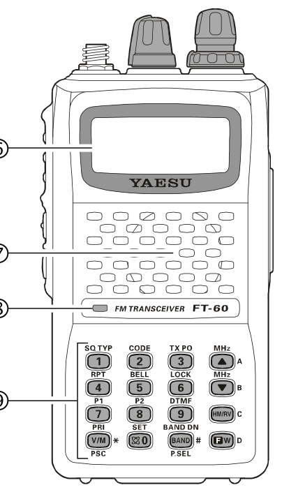
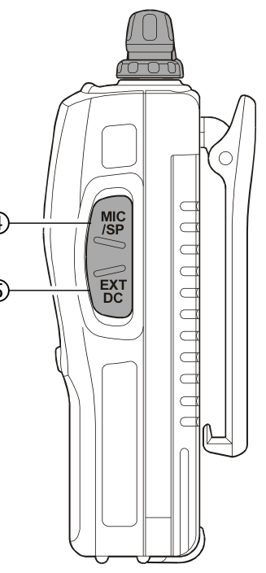
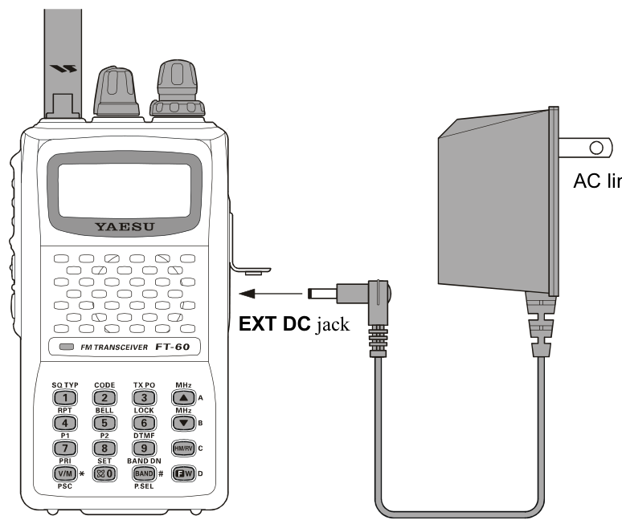
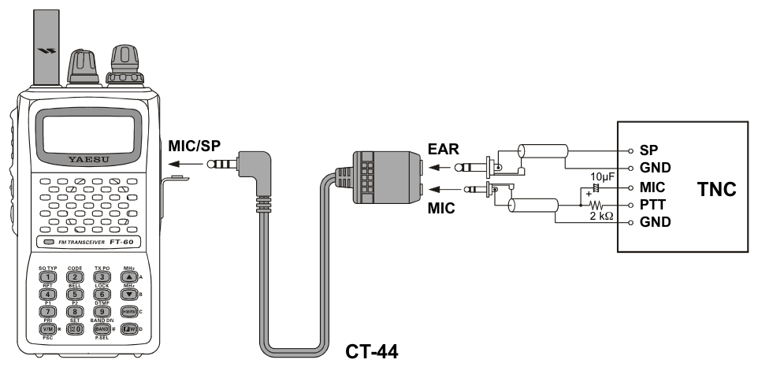
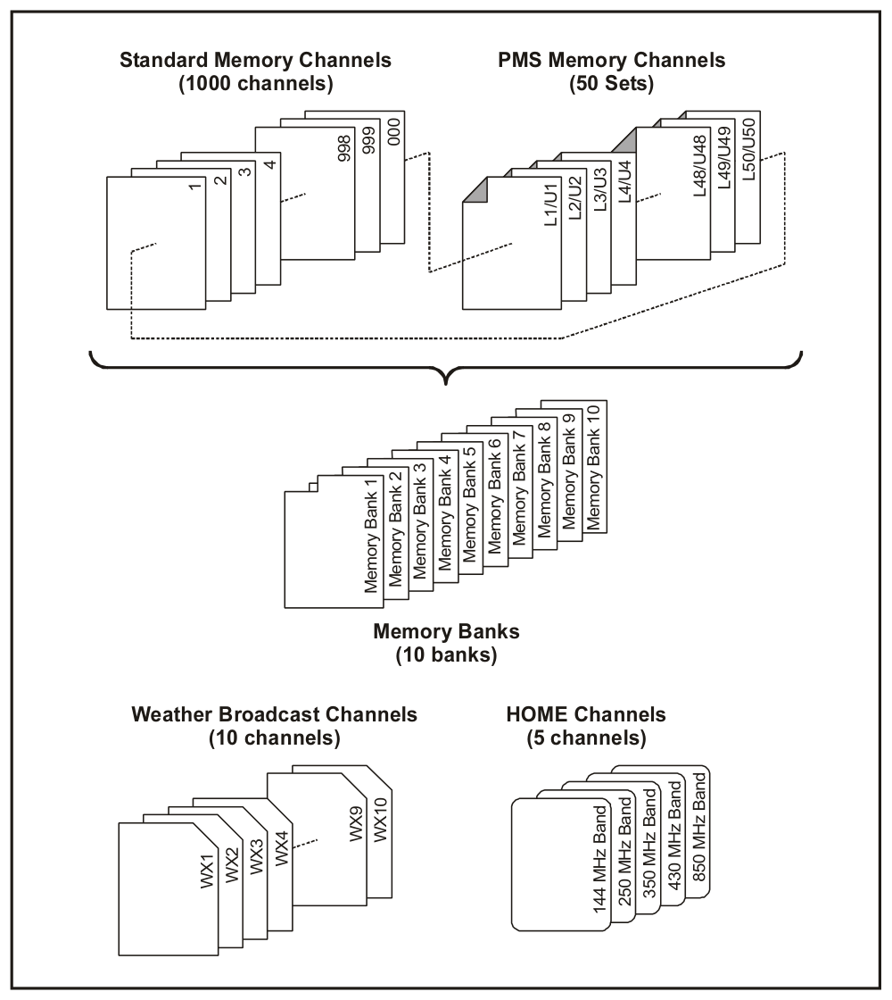

<!DOCTYPE html>
<html lang="en">
<head>
  <meta charset="utf-8">
  <title>FT-60R OPERATING MANUAL</title>
  <meta name="title" content="FT-60R OPERATING MANUAL">
<meta name="category" content="manuals">
<meta name="source" content="pdfs/public/basic/nav-comms_manual_yaesu_ft-60r.pdf">
<meta name="sha256" content="f832b03abcc2">
<meta name="pipeline" content="pymupdf4llm">
<meta name="generated" content="2026-11-15T13:53:53.108406Z">
  <style>
    :root { color-scheme: light; }
body { font-family: system-ui, sans-serif; margin: 0; background: #fff; color: #1a1a1a; line-height: 1.6; }
.layout { display: grid; grid-template-columns: 1fr; gap: 2rem; max-width: 80rem; margin: 0 auto; padding: 1.5rem; }
.layout:has(nav.toc) { grid-template-columns: 16rem minmax(0, 1fr); }
nav.toc { position: sticky; top: 1rem; align-self: start; max-height: calc(100vh - 2rem); overflow: auto; font-size: 0.85rem; }
nav.toc .toc-title { color: #1a1a1a; font-weight: 600; margin: 0 0 0.5rem; }
nav.toc ul { list-style: none; padding: 0; margin: 0; }
nav.toc li { margin: 0.25rem 0; }
nav.toc a { color: #0b57d0; text-decoration: none; }
nav.toc a:hover { text-decoration: underline; }
main { max-width: none; min-width: 0; overflow-x: auto; }
h1 { font-size: 1.8rem; color: #1a1a1a; margin: 0 0 0.5rem; }
h2, h3, h4, h5, h6 { color: #1a1a1a; margin-top: 1.8rem; font-size: 1.15rem; }
a { color: #0b57d0; }
.meta { font-size: 0.8rem; color: #555; }
figure { margin: 1.5rem 0; background: #f6f6f6; padding: 1rem; border: 1px solid #ddd; border-radius: 6px; max-width: 100%; }
figure img { max-width: 100%; height: auto; background: #fff; cursor: zoom-in; }
figcaption { font-size: 0.85rem; color: #555; margin-top: 0.5rem; }
button.zoom { background: none; border: 0; padding: 0; display: block; width: 100%; max-width: 100%; cursor: zoom-in; }
dialog { max-width: 90vw; max-height: 90vh; background: #fff; color: #1a1a1a; border: 1px solid #ccc; border-radius: 8px; padding: 1rem; }
dialog img { max-width: 100%; max-height: 75vh; background: #fff; }
dialog::backdrop { background: rgba(0,0,0,0.5); }
ul { padding-left: 1.2rem; }
table { border-collapse: collapse; width: 100%; max-width: 100%; margin: 1rem 0; }
th, td { border: 1px solid #bbb; padding: 0.4rem 0.6rem; text-align: left; vertical-align: top; }
th { background: #f0f0f0; font-weight: 600; }
@media (max-width: 800px) {
  .layout { grid-template-columns: 1fr; }
  nav.toc { position: static; max-height: 16rem; }
}
  </style>
</head>
<body>
  <div class="layout">
    <nav class="toc" aria-label="Contents"><p class="toc-title">Contents</p><ul><li><a href="#selecting-the-operating-band">Selecting the Operating Band — 13</a></li><li><a href="#frequency-navigation">Frequency Navigation — 13</a></li><li><a href="#transmission">Transmission — 15</a></li><li><a href="#keyboard-locking">Keyboard Locking — 16</a></li><li><a href="#keypad-lcd-illumination">Keypad/LCD Illumination — 17</a></li><li><a href="#disabling-the-keypad-beeper">Disabling the Keypad Beeper — 17</a></li><li><a href="#rf-squelch">RF Squelch — 18</a></li><li><a href="#checking-the-battery-voltage">Checking the Battery Voltage — 18</a></li><li><a href="#repeater-shifts">Repeater Shifts — 19</a></li><li><a href="#automatic-repeater-shift-ars">Automatic Repeater Shift (ARS) — 19</a></li><li><a href="#manual-repeater-shift-activation">Manual Repeater Shift Activation — 20</a></li><li><a href="#ctcss-operation">CTCSS Operation — 22</a></li><li><a href="#dcs-operation">DCS Operation — 23</a></li><li><a href="#tone-search-scanning">Tone Search Scanning — 24</a></li><li><a href="#ctcss-dcs-bell-operation">CTCSS/DCS Bell Operation — 25</a></li><li><a href="#split-tone-operation">Split Tone Operation — 25</a></li><li><a href="#memory-storage">Memory Storage — 28</a></li></ul></nav>
    <main>
      <p><a href="../../index.html">← Back to index</a></p>
      <h1>FT-60R OPERATING MANUAL</h1>
      <p class="meta">Category: manuals · Source: pdfs/public/basic/nav-comms_manual_yaesu_ft-60r.pdf · SHA: f832b03abcc2</p>
      <h3 id="vhf-uhf">VHF/UHF</h3>
<p>DUAL BAND TRANSCEIVER</p>
<h1 id="ft-60r">FT-60R</h1>
<p>VERTEX STANDARD CO., LTD.
4-8-8 Nakameguro, Meguro-Ku, Tokyo 153-8644, Japan
VERTEX STANDARD
US Headquarters
10900 Walker Street, Cypress, CA 90630, U.S.A.
YAESU EUROPE B.V.
P.O. Box 75525, 1118 ZN Schiphol, The Netherlands
YAESU UK LTD.
Unit 12, Sun Valley Business Park, Winnall Close
Winchester, Hampshire, SO23 0LB, U.K.
VERTEX STANDARD HK LTD.
Unit 5, 20/F., Seaview Centre, 139-141 Hoi Bun Road,
Kwun Tong, Kowloon, Hong Kong</p><ul>
<li>General Description — 1</li>
<li>Accessories &amp; Options — 2</li>
<li>
<p>Controls &amp; Connections — 3</p>
</li>
<li>
<p>Top &amp; Front Panel — 3</p>
</li>
<li>LCD — 4</li>
<li>Side Panel — 5</li>
<li>Keypad — 6</li>
<li>
<p>Installation of Accessories — 8</p>
</li>
<li><a href="#antenna-installation">Antenna Installation — 8</a></li>
<li><a href="#installation-of-fnb-83-battery-pack">Installation of FNB-83 Battery Pack — 8</a></li>
<li><a href="#battery-charging">Battery Charging — 9</a></li>
<li><a href="#low-battery-indication">Low Battery Indication — 10</a></li>
<li>Installation of FBA-25A Battery Case — 10</li>
<li>Interface of Packet TNCs — 11</li>
<li>
<p>Operation — 12</p>
</li>
<li><a href="#switching-power-on-and-off">Switching Power On and Off — 12</a></li>
</ul>
<p>Adjusting the Audio Volume Level and</p>
<ul>
<li>Squelch Setting — 12</li>
<li><a href="#selecting-the-operating-band">Selecting the Operating Band — 13</a></li>
<li><a href="#frequency-navigation">Frequency Navigation — 13</a></li>
<li><a href="#transmission">Transmission — 15</a></li>
<li>
<p>Advanced Operation — 16</p>
</li>
<li><a href="#keyboard-locking">Keyboard Locking — 16</a></li>
<li><a href="#keypad-lcd-illumination">Keypad/LCD Illumination — 17</a></li>
<li><a href="#disabling-the-keypad-beeper">Disabling the Keypad Beeper — 17</a></li>
<li><a href="#rf-squelch">RF Squelch — 18</a></li>
<li><a href="#checking-the-battery-voltage">Checking the Battery Voltage — 18</a></li>
<li>
<p>Repeater Operation — 19</p>
</li>
<li><a href="#repeater-shifts">Repeater Shifts — 19</a></li>
<li><a href="#automatic-repeater-shift-ars">Automatic Repeater Shift (ARS) — 19</a></li>
<li><a href="#manual-repeater-shift-activation">Manual Repeater Shift Activation — 20</a></li>
<li>
<p>CTCSS/DCS Operation — 22</p>
</li>
<li><a href="#ctcss-operation">CTCSS Operation — 22</a></li>
<li><a href="#dcs-operation">DCS Operation — 23</a></li>
<li><a href="#tone-search-scanning">Tone Search Scanning — 24</a></li>
<li><a href="#ctcss-dcs-bell-operation">CTCSS/DCS Bell Operation — 25</a></li>
<li><a href="#split-tone-operation">Split Tone Operation — 25</a></li>
<li>Tone Calling (1750 Hz) — 26</li>
<li>
<p>Memory Mode — 28</p>
</li>
<li><a href="#memory-storage">Memory Storage — 28</a></li>
</ul>
<p>Storing Independent</p>
<ul>
<li>Transmit Frequencies (“Odd Split”) — 28</li>
<li><a href="#memory-recall">Memory Recall — 29</a></li>
<li><a href="#home-channel-memory">HOME Channel Memory — 29</a></li>
<li><a href="#labeling-memories">Labeling Memories — 30</a></li>
<li><a href="#memory-offset-tuning">Memory Offset Tuning — 31</a></li>
<li><a href="#deleting-memories">Deleting Memories — 32</a></li>
<li><a href="#moving-memory-data-to-the-vfo">Moving Memory Data to the VFO — 32</a></li>
<li><a href="#memory-bank-operation">Memory Bank Operation — 33</a></li>
<li><a href="#memory-only-mode">Memory Only Mode — 34</a></li>
<li>
<p>Weather Broadcast Channels — 34</p>
</li>
<li>
<p>Scanning — 35</p>
</li>
<li><a href="#vfo-scanning">VFO Scanning — 35</a></li>
<li>
<p>Manual VFO Scan — 35</p>
</li>
<li>Programmed VFO Scan — 36</li>
<li><a href="#memory-scanning">Memory Scanning — 37</a></li>
</ul>
<p>How to Skip (Omit) a Channel</p>
<ul>
<li>during Memory Scan Operation — 37</li>
<li>Preferential Memory Scan — 38</li>
<li>Memory Bank Scan — 39</li>
<li><a href="#weather-alert-scan">Weather Alert Scan — 39</a></li>
</ul>
<p>Programmable (Band Limit) Memory Scan</p>
<ul>
<li>(PMS) — 40</li>
</ul>
<p>“Priority Channel” Scanning</p>
<ul>
<li>(Dual Watch) — 41</li>
</ul>
<p>Automatic Lamp Illumination</p>
<ul>
<li>on Scan Stop — 43</li>
<li><a href="#band-edge-beeper">Band Edge Beeper — 43</a></li>
<li>EPCS (Enhanced Paging &amp; Code Squelch) — 44</li>
</ul>
<p>Storing the CTCSS Tone Pairs</p>
<ul>
<li>for EPCS Operation — 44</li>
</ul>
<p>Activating the Enhanced Paging &amp;</p>
<ul>
<li>Code Squelch System — 45</li>
<li>Paging Answer Back — 45</li>
<li>
<p>Emergency Feature — 46</p>
</li>
<li><a href="#emergency-channel-operation">Emergency Channel Operation — 46</a></li>
<li><a href="#emergency-automatic-id-eai-feature">Emergency Automatic ID (EAI) Feature — 46</a></li>
<li>Smart Search Operation — 48</li>
<li>Internet Connection Feature — 49</li>
<li>ARTS (Automatic Range Transponder System) — 51</li>
<li>DTMF Operation — 54</li>
<li>
<p>Miscellaneous Settings — 56</p>
</li>
<li><a href="#password">Password — 56</a></li>
<li>Programming the Key Assignment — 57</li>
<li><a href="#changing-the-channel-steps">Changing the Channel Steps — 57</a></li>
<li><a href="#changing-the-receiving-mode">Changing the Receiving Mode — 58</a></li>
<li><a href="#receive-battery-saver-setup">Receive Battery Saver Setup — 59</a></li>
<li><a href="#tx-battery-saver">TX Battery Saver — 59</a></li>
<li><a href="#disabling-the-tx-busy-indicator">Disabling the TX/BUSY Indicator — 60</a></li>
<li><a href="#automatic-power-off-apo-feature">Automatic Power-Off (APO) Feature — 60</a></li>
<li>Transmitter Time-Out Timer (TOT) — 61</li>
<li>Busy Channel Lock-Out (BCLO) — 61</li>
<li><a href="#mono-band-operation">Mono Band Operation — 62</a></li>
<li><a href="#changing-the-tx-deviation-level">Changing the TX Deviation Level — 62</a></li>
<li><a href="#dcs-code-inversion">DCS Code Inversion — 63</a></li>
<li>Reset Procedures — 64</li>
<li>Cloning — 65</li>
<li>Set Mode — 66</li>
<li>Specifications — 79</li>
<li>“AUTO” Mode Preset Operating Parameters — 80</li>
</ul><p>The FT 60R is a dual band FM transceiver with extensive receive frequency coverage,
providing local-area two-way amateur communications along with unmatched monitoring
capability.</p>
<p>The FT-60R’s small size allows you to take it anywhere - hiking, skiing, or while walking
around town - and its operating flexibility brings the user many avenues of operating enjoyment. Its incredibly tiny FNB-83 Rechargeable Nickel-Metal Hydride Battery Pack
provides up to 5 Watts of transmit power on 144 MHz and 430 MHz Amateur Bands.
Besides 144- and 430-MHz transceive operation, the FT-60R provides receive coverage
of the VHF and UHF TV bands, the VHF AM aircraft band, and a wide range of commercial and public safety frequencies!</p>
<p>New and exciting features of the FT-60R are the Emergency Automatic ID (EAI) function,
that will automatically cause your FT-60R to transmit your callsign and engage your rig’s</p>
<p>microphone, even if you are disabled and unable
to press the PTT switch; Enhanced Paging and
Code Squelch (EPCS), that allows you to page a
particular station and only receive calls from that
station, if desired; and a security Password feature, that will allow you to turn on and operate
your transceiver only after you enter your Password.</p>
<p>Additional features include a convenient access
key for Vertex Standard’s WIRES™ (Wide-coverage Internet Repeater Enhancement System), a
transmit Time-Out Timer (TOT), Automatic
Power-Off (APO), Automatic Repeater Shift
(ARS), Yaesu’s exclusive ARTS™ (Auto-Range
Transponder System) which “beeps” the user when
you move out of communications range with another ARTS™ equipped station, plus provision for
reduction of the TX deviation in areas of high channel congestion. And an RF squelch circuit allows
the owner to set the squelch to open at a programmable setting of the S-Meter, thus reducing guesswork in setting the squelch threshold.</p>
<p>We appreciate your purchase of the FT-60R, and
encourage you to read this manual thoroughly, so
as to learn about the many exciting features of your</p><h5 id="supplied-accessories">SUPPLIED ACCESSORIES</h5>
<ul>
<li>
<p>FNB-83 7.2 V, 1,400 mAh
Rechargeable Nickel-Metal Hydride Battery Pack</p>
</li>
<li>
<p>NC-88B/C [�] Overnight Battery Charger (10-Hour)</p>
</li>
<li>
<p>Belt Clip</p>
</li>
<li>
<p>Antenna</p>
</li>
<li>
<p>Operating Manual</p>
</li>
<li>
<p>Warranty Card</p>
</li>
</ul>
<h5 id="available-options">AVAILABLE OPTIONS</h5>
<ul>
<li>
<p>FNB-83 7.2 V, 1,400 mAh
Rechargeable Nickel-Metal Hydride Battery Pack</p>
</li>
<li>
<p>FBA-25A Compact Dry Battery Case for 6 AA-size cells</p>
</li>
<li>
<p>CD-29B/C [�] Rapid Charger (1.5-Hour)</p>
</li>
<li>
<p>NC-88B/C [�] Overnight Battery Charger (10-Hours)</p>
</li>
<li>
<p>CN-3 BNC-to-SMA Adapter</p>
</li>
<li>
<p>CT-27 Cloning Cable</p>
</li>
<li>
<p>CT-44 Microphone Adapter</p>
</li>
<li>
<p>E-DC-5B DC Cable with Cigarette-Lighter Adapter</p>
</li>
<li>
<p>E-DC-6 DC Cable; plug and wire only</p>
</li>
<li>
<p>MH-34B4B Speaker/Microphone</p>
</li>
<li>
<p>MH-37A4B Ear piece/Microphone</p>
</li>
<li>
<p>VC-25 VOX Headset</p>
</li>
</ul>
<p>�: “B” suffix is for use with 100-120 VAC, “C” suffix is for use with 230-240 VAC.</p>
<p>Availability of accessories may vary. Some accessories are supplied as standard per local
requirements, while others may be unavailable in some regions. Consult your Yaesu dealer
for details regarding these and any newly-available options. Connection of any non-Yaesuapproved accessory, should it cause damage, may void the Limited Warranty on this apparatus.</p><h5 id="antenna-jack">� Antenna Jack</h5>
<p>Connect the supplied rubber flex antenna (or another antenna presenting a 50-Ohm
impedance) here.</p>
<h5 id="vol-pwr-knob">� VOL/PWR Knob</h5>
<p>Turn this control clockwise to turn the radio on and to
increase the volume. Counter-clockwise rotation into
the click-stop will turn the radio off.</p>
<h5 id="tx-busy-indicator-lamp">� TX/BUSY Indicator Lamp</h5>
<p>This indicator glows green when the squelch opens,
and turns red during transmit.</p>
<h5 id="dial-knob">� DIAL Knob</h5>
<p>This (inner) 20-position detented rotary switch is used for setting the operating frequency, and also is used for menu selections and other adjustments.</p>
<h5 id="sql-knob">� SQL Knob</h5>
<p>This (outer) control is used to silence background noise on the receiver. It should be advanced clockwise just to the point where the
noise is silenced (and the green “BUSY” indicator turns off).</p>
<h5 id="lcd-liquid-crystal-display">� LCD (Liquid Crystal Display)</h5>
<p>The display shows current operating condition,
as indicated on the next page.</p>
<h5 id="speaker">� Speaker</h5>
<p>The internal speaker is located here.</p>
<h5 id="microphone">� Microphone</h5>
<p>The internal microphone is located here.</p>
<h5 id="keypad">� Keypad</h5>
<p>These 16 keys select many of most important
operating features on the FT-60R. The functions of the keys are described in detail on the
pages to follow.</p><figure><button aria-label="Enlarge Figure from page 5.  " class="zoom" data-dialog="fig-1" type="button"></button><figcaption>Figure from page 5.  </figcaption><dialog id="fig-1"><p>Figure from page 5.  </p><form method="dialog"><button>Close</button></form></dialog></figure><p>Memory Channel Number</p>
<p>Skip Memory Channel
or Preferential Memory</p>
<p>Channel</p>
<p>Priority Channel</p>
<p>Memory Bank Active</p>
<p>Operating Mode</p>
<p>Secondary Keypad</p>
<p>Active</p>
<p>Key Lock Active</p>
<p>Repeater Shift Direction</p>
<p>Dual Watch Active</p>
<p>Automatic Power-Off
Active</p>
<p>Internet Connection
Feature Active</p>
<p>Bell Alerm Active</p>
<p>Operating Frequency</p>
<p>Battery Indicator</p>
<p>Low TX Power Selected</p><h5 id="ptt-push-to-talk-switch">� PTT (Push To Talk) Switch</h5>
<p>Press this switch to transmit, and release it (to receive) after your transmission is completed.</p>
<h5 id="moni-switch">� MONI Switch</h5>
<p>Pressing this switch disables the noise squelching action, allowing you to hear very
weak signals near the background noise level temporarily.
Press the [F/W] key on the keypad first, then press this switch to “open” the squelch
continuously. Press this switch again to resume normal (quiet) monitoring.</p>
<h5 id="lamp-switch">� LAMP Switch</h5>
<p>Pressing this switch illuminates the LCD and keypad for five seconds, after which the
back-lighting will automatically turn off.
Press the [F/W] key on the keypad first, then press this switch to activate the backlighting lamp continuously. To turn the lamp off, press this switch again.
You can change the primary (press key) function of this switch, if you prefer. See page
17 for details.</p>
<h5 id="mic-sp-jack">� MIC/SP Jack</h5>
<p>This four-conductor
miniature jack provides connection
points for microphone
audio, earphone audio, PTT, and ground.</p>
<h5 id="ext-dc-jack">� EXT DC Jack</h5>
<p>This coaxial DC jack
allows connection to
an external DC power
source (6-16V DC).
The center pin of this
jack is the Positive (+)
connection.</p><figure><button aria-label="Enlarge Figure from page 7. MIC /SP" class="zoom" data-dialog="fig-2" type="button"></button><figcaption>Figure from page 7. MIC /SP</figcaption><dialog id="fig-2"><p>Figure from page 7. MIC /SP</p><form method="dialog"><button>Close</button></form></dialog></figure><p>|Primary Function
(PRESS KEY)|Frequency entry digit “1”|Frequency entry digit “2”|
|---|---|---|
|Secondary Function
(PRESS [F/W] + KEY)|Activates the CTCSS or DCS
Operation|Selects the CTCSS tone or DCS
code number|
|Third Function
(PRESS &amp; HOLD KEY)|Recalls the “Weather” broadcast
channel bank|Activates the ARTS feature|
||||
|Primary Function
(PRESS KEY)|Frequency entry digit “4”|Frequency entry digit “5”|
|Secondary Function
(PRESS [F/W] + KEY)|Selects the direction of the uplink
frequency shift (either “–,” “+,” or
“simplex”) during repeater operation|Selects the CTCSS/DCS Bell ringer
repetitions|
|Third Function
(PRESS &amp; HOLD KEY)|Activates the EMERGENCY
function|None|
||1|1|
|Primary Function
(PRESS KEY)|Frequency entry digit “7”|Frequency entry digit “8”|
|Secondary Function
(PRESS [F/W] + KEY)|Activates the EPCS (Enhanced
Paging &amp; Code Squelch) feature|Selects the Memory Scan “Skip”
channel-selection mode|
|Third Function
(PRESS &amp; HOLD KEY)|None|None|
||||
|Primary Function
(PRESS KEY)|Switches the frequency control
between the VFO and Memory
Systems|Activates the Internet Connection
feature
Frequency entry digit “0”|
|Secondary Function
(PRESS [F/W] + KEY)|Activates the Priority (Dual Watch)
function|Engages the Set (Menu) Mode|
|Third Function
(PRESS &amp; HOLD KEY)|Starts the programmable scanner
upward (toward a higher frequency
or a higher channel number)|Enables Internet access code
selection|</p><p>|Primary Function
(PRESS KEY)|Frequency entry digit “3”|Increases the VFO frequency by
one step or moves the memory
channel to the next-highest channel|
|---|---|---|
|Secondary Function
(PRESS [F/W] + KEY)|Selects the desired transmit power
output level|Tunes the VFO frequency upward
in 1 MHz steps|
|Third Function
(PRESS &amp; HOLD KEY)|Activates the Smart Search feature|Starts the scanner upward
(toward a higher frequency or
a higher channel number)|
||||
|Primary Function
(PRESS KEY)|Frequency entry digit “6”|Decreases the VFO frequency by
one step or moves the memory
channel to the next-lowest channel|
|Secondary Function
(PRESS [F/W] + KEY)|Activates the Key Lockout feature|Tunes the VFO frequency down-
ward in 1 MHz steps|
|Third Function
(PRESS &amp; HOLD KEY)|Activates the Key Lockout feature|Starts the scanner downward
(toward a lower frequency or a
lower channel number)|
|||2|
|Primary Function
(PRESS KEY)|Frequency entry digit “9”|Reverses the transmit and receive
frequencies while working through
a repeater|
|Secondary Function
(PRESS [F/W] + KEY)|Selects the DTMF mode|Switches to the “Home” (favorite
frequency) Channel|
|Third Function
(PRESS &amp; HOLD KEY)|None|None|
||||
|Primary Function
(PRESS KEY)|Moves operation to the next-
highest frequency band while in the
VFO mode|Activates the “Secondary” key
function|
|Secondary Function
(PRESS [F/W] + KEY)|Activates  the  “Memory  “Tune”  mode
while  in  the  Memory  Recall  mode
Moves  operation  to  the  next-lowest  frequency  band|Disables the “Secondary” key
function|
|Third Function
(PRESS &amp; HOLD KEY)|Selects the bandwidth for the
programmable scanner while in the
VFO mode|Activates the “Memory Write” mode
(for memory channel storage)|</p><h5 id="antenna-installation">ANTENNA INSTALLATION</h5>
<p>The supplied antenna provides good results over the entire frequency range of the transceiver. However, for enhanced reception on certain non-Amateur frequencies, you may wish to connect an antenna designed specifically for that frequency range,
as the supplied antenna is necessarily a compromise outside the
Amateur bands, and cannot be expected to provide high performance at all frequencies.</p>
<p>To install the supplied antenna, hold the bottom end of the antenna, then screw it onto the mating connector on the transceiver
until it is snug. Do not over-tighten by use of extreme force.</p>
<p>Notes:</p>
<ul>
<li>
<p>Never transmit without having an antenna connected.</p>
</li>
<li>
<p>When installing the supplied antenna, never hold the upper part of the antenna while
screwing it onto the mating connector on the transceiver.</p>
</li>
<li>
<p>If using an external antenna for transmission, ensure that the SWR presented to the
transceiver is 1.5:1 or lower, to avoid excessive feedline loss.</p>
</li>
</ul>
<h5 id="installation-of-fnb-83-battery-pack">INSTALLATION OF FNB-83 BATTERY PACK</h5>
<p>The FNB-83 is a high-performance Ni-MH battery providing high capacity in a compact
package. Under normal use, the FNB-83 may be used for approximately 300 charge cycles,
after which operating time may be expected to decrease. If you have an old battery pack
which is displaying capacity which has become diminished, you should replace the pack
with a new one.</p>
<p>Installation of the battery is easy and quick:</p>
<ul>
<li>Insert the battery pack into the battery compartment on the back of the</li>
</ul>
<p>with a “Click.”</p>
<ul>
<li>To remove the
battery, turn the
radio off and remove any protective cases.
Open the Battery Pack Latch
on the bottom of the radio, then slide the battery downward and out from the radio</li>
</ul><h5 id="battery-charging">BATTERY CHARGING</h5>
<p>If the battery has never been used, or its charge is depleted, it may be charged by connecting the NC-88 Overnight Battery Charger, as shown in the illustration, to the EXT DC
jack. If only 12 ~ 16 Volt DC power is available, the optional E-DC-5B DC Adapter (with
its cigarette lighter plug) may also be used for charging the battery.</p>
<p>A fully-discharged pack will be charged completely in 10 hours. Disconnect the NC-88
from the EXT DC jack and the AC line outlet.</p>
<p>Important Note</p>
<ul>
<li>
<p>The NC-88 is not designed to power the transceiver for operation (reception or
transmission).</p>
</li>
<li>
<p>Do not leave the NC-88 connected to the transceiver for continuous periods in excess of 24 hours. Long term overcharging can degrade the Ni-MH battery pack and
significantly shorten its useful life.</p>
</li>
<li>
<p>Please be advised that the NC-88 may contribute noise to TV and radio reception in
the immediate vicinity, so we do not recommend its use adjacent to such devices.</p>
</li>
</ul>
<h6 id="section">�</h6><figure><button aria-label="Enlarge Figure from page 11.  AC line outlet" class="zoom" data-dialog="fig-3" type="button"></button><figcaption>Figure from page 11.  AC line outlet</figcaption><dialog id="fig-3"><p>Figure from page 11.  AC line outlet</p><form method="dialog"><button>Close</button></form></dialog></figure><h5 id="low-battery-indication">LOW BATTERY INDICATION</h5>
<ul>
<li>As your battery discharges during use, the voltage will gradually become lower. When
the battery voltage is becoming too low for reliable operation,</li>
</ul>
<p>battery pack must be recharged before further use.</p>
<p>degrade the charge capacity of your Ni-MH battery pack.</p>
<h5 id="installation-of-fba-25a-alkaline-battery-case-option">INSTALLATION OF FBA-25A ALKALINE BATTERY CASE [(] OPTION [)]</h5>
<p>The optional FBA-25A Battery Case allows operation of the FT-60R using six “AA” size
Alkaline batteries.</p>
<p>When installing batteries, insert the (–) end first, then press in the (+) end so the battery
snaps into place. Always replace all six batteries at the same time, paying attention to the
polarity indicated inside the case.</p>
<p>The FBA-25A must not be used with rechargeable cells. The FBA-25A does not contain
the thermal and over-current protection circuits (provided in the “FNB” series of Ni-MH
Battery Packs) required when utilizing Ni-Cd and Ni-MH cells.</p>
<p>Note that the power output and battery life will be much shorter when using Alkaline AA
cells. They should be considered an emergency backup power source only, for this reason.</p><p>The FT 60R may be used for Packet operation, using the optional CT 44 microphone
adapter (available from your Yaesu dealer) for easy interconnection to commonly-available connectors wired to your TNC. You may also build your own cable, using a fourconductor miniature phone plug, per the diagram below.</p>
<p>The audio level from the receiver to the TNC may be adjusted by using the VOL knob, as
with voice operation. The input level to the FT-60R from the TNC should be adjusted at
the TNC side; the optimum input voltage is approximately 5 mV at 2000 Ohms.</p>
<p>Be sure to turn the transceiver and TNC off before connecting the cables, so as to prevent
voltage spikes from possibly damaging your transceiver.</p>
<p>When you are operating on Packet, switch the Receive Battery Saver OFF, as the “sleep”
cycle may “collide” with the beginning of an incoming Packet transmission, causing your
TNC not to receive the full data burst. See page 59 for details regarding Battery Saver
setup.</p><figure><button aria-label="Enlarge Figure from page 13. CT-44 EAR" class="zoom" data-dialog="fig-4" type="button"></button><figcaption>Figure from page 13. CT-44 EAR</figcaption><dialog id="fig-4"><p>Figure from page 13. CT-44 EAR</p><form method="dialog"><button>Close</button></form></dialog></figure><p>Hi! I m R. F. Radio, and I ll be helping you along as you learn the many
features of the FT-60R. I know you’re anxious to get on the air, but I encourage you to read the “Operation” section of this manual as thoroughly as
possible, so you’ll get the most out of this fantastic new transceiver. Now. . .let’s get
operating!</p>
<h5 id="switching-power-on-and-off">SWITCHING POWER ON AND OFF</h5>
<ul>
<li>
<p>Be sure the Battery Pack is installed, and that the battery is fully charged. Connect the antenna to the top panel
Antenna jack.</p>
</li>
<li>
<p>Rotate the top panel’s VOL knob out of the click-stop to
turn on the radio. The current DC supply voltage will be
indicated on the display for 2 seconds. After this 2 second interval, the display will resume its normal indication of the operating frequency.</p>
</li>
<li>
<p>To turn the radio off, turn the VOL knob fully counter-clockwise into the click stop
position.</p>
</li>
</ul>
<h5 id="adjusting-the-audio-volume-level-and-squelch-setting">ADJUSTING THE AUDIO VOLUME LEVEL AND SQUELCH SETTING</h5>
<ul>
<li>
<p>At first, set the SQL knob fully counter-clockwise. Now,
you may rotate the VOL knob to adjust the receiver level
for a comfortable listing level, using the background
noise as a reference.</p>
</li>
<li>
<p>To set the squelch, turn the SQL knob clockwise, slightly
past the point where the background noise is muted. This
is the point of best sensitivity to weak signals, and we
recommend that you not rotate the SQL knob very much past the point where the
background noise is just silenced.</p>
</li>
</ul>
<p>1) A special “RF Squelch” feature is provided on this radio. This feature
allows you to set the squelch so that only signals exceeding a certain S-meter
level will open the squelch. See page 18 for details.
2) If you’re operating in an area of high RF pollution, you may need to consider “Tone
Squelch” operation using the built-in CTCSS Decoder. This feature will keep your radio quiet until a call is received from a station sending a carrier which contains a matching
(subaudible) CTCSS tone. Or, if your friends have radios equipped with DCS (Digital
Coded Squelch) like your FT-60R has, try using that mode for silent monitoring of busy
channels.</p><h5 id="selecting-the-operating-band">SELECTING THE OPERATING BAND</h5>
<ul>
<li>Press the [BAND(BAND DN)] key repetitively. You will
see the LCD indication move toward a higher frequency
band each time you press the [BAND(BAND DN)] key.</li>
</ul>
<p>850 MHz   - 144 MHz   250 MHz      - 350 MHz      430 MHz        - 850 MHz [……]</p>
<ul>
<li>If you wish to move the operating band selection downward (toward a lower frequency band), press the [F/W]
key first, then press the [BAND(BAND DN)] key.</li>
</ul>
<p>350 MHz   - 250 MHz   144 MHz      - 850 MHz      430 MHz        - 350 MHz [……]</p>
<ul>
<li>Once you have selected the desired band, you
may initiate manual tuning (or scanning) per
the discussion in the next chapter.</li>
</ul>
<h5 id="frequency-navigation">FREQUENCY NAVIGATION</h5>
<p>The FT-60R will initially be operating in the “VFO” mode, a channelized system which
allows free tuning throughout the currently-selected operating band.</p>
<p>Three basic frequency navigation methods are available on the FT-60R:</p>
<p>1) Tuning Dial
Rotation of the DIAL allows tuning in the pre-programmed
steps established for the current operating band. Clockwise
rotation of the DIAL causes the FT-60R to be tuned toward
a higher frequency, while counter-clockwise rotation will
lower the operating frequency.</p>
<p>If you press the [F/W] key momentarily, then rotate the DIAL,
frequency steps of 1 MHz will be selected. This feature is
extremely useful for making rapid frequency excursions over the wide tuning range of the
FT-60R.</p><h5 id="frequency-navigation-2">FREQUENCY NAVIGATION</h5>
<p>2) Direct Keypad Frequency Entry
The desired operating frequency may be entered directly from the keypad.</p>
<p>To enter a frequency from the keypad, just press the numbered digits on the keypad in the
proper sequence.</p>
<p>Examples:</p>
<p>To enter 146.560 MHz, press [1] � [4] � [6] � [5] � [6] � [0]
To enter 146.5625 MHz (in 12.5 kHz), [1] � [4] � [6] � [5] � [6] � [2]</p>
<p>3) Scanning
Press and hold in either the [�(MHz)] or [�(MHz)] key
for one second to initiate upward or downward scanning,
respectively (Manual VFO Scan).</p>
<p>For scanning within a limited sub-band range, from the VFO
mode, press and hold in the [V/M(PRI)] key for one second
to begin scanning toward a higher frequency within the previously-defined sub-band (Programmed VFO Scan). Details
regarding sub-band setup may be found on page 36.</p>
<p>If you wish to reverse the direction of the scan (i.e. toward a
lower frequency, instead of a higher frequency), just rotate
the DIAL one click in the counter-clockwise direction while
the FT-60R is scanning. The scanning direction will be reversed. To revert to scanning toward a higher frequency once
more, rotate the DIAL one click clockwise.</p>
<p>(Manual VFO Scan)</p>
<p>(Programmed VFO Scan)</p>
<p>The scanner will stop when it receives a signal strong enough to break through the Squelch
threshold. The FT-60R will then hold on that frequency according to the setting of the
“RESUME” mode (Set Mode Item 34: RESUME). Press the PTT switch momentarily to
cancel the scanning. This only stops the scan; it does not cause transmission to occur. See
page 35 for details regarding Scan Operation.</p><h5 id="transmission">TRANSMISSION</h5>
<p>Once you have set up an appropriate frequency inside one of the 144 MHz or 430 MHz
Amateur bands on which the FT-60R can transmit, you’re ready to go on the air! These are
the most basic steps; more advanced aspects of transmitter operation will be discussed later.</p>
<ul>
<li>
<p>To transmit, press the PTT switch, and speak into the
front panel microphone (located in the lower left-hand
corner of the speaker grille) in a normal voice level. The
TX/BUSY indicator will glow red during transmission.</p>
</li>
<li>
<p>To return to the receive mode, release the PTT switch.</p>
</li>
<li>
<p>During transmission, the relative power level will be
indicated on the bar graph at the bottom of the LCD;
full scale deflection confirms “High Power” operation, while deflection of two bars
indicates “Low Power” operation. Five bars indicates “Medium Power” operation.
Additionally, the “LOW” icon will appear at the bottom of the display while operating
on the “Low Power” and “Medium Power” settings.</p>
</li>
</ul>
<p>1) If you’re just talking to friends in the immediate area, you’ll get much longer
battery life by switching to Low Power operation, described in the next chapter.
And don’t forget: always have an antenna connected when you transmit.
2) Transmission is possible only on the 144 MHz and 430 MHz bands.</p>
<p>Changing the Transmitter Power Level
To change the power level:</p>
<ul>
<li>
<p>Press the [F/W] key, then press the [3(TX PO)] key.
The LCD shows the current power output level.</p>
</li>
<li>
<p>Rotate the DIAL knob to select the desired power output level. Available selections are “HIGH” (5 W), “MID”
(2 W), and “LOW” (0.5 W).</p>
</li>
<li>
<p>When you have made your choice, press the PTT switch
to save the new setting and return to normal operation.</p>
</li>
</ul>
<p>1) The FT-60R is smart! You can set up Low power on the 144 MHz band,
while leaving 430 MHz on High power, and the radio will remember the
different settings on both bands. And when you store memories, you can store
the power output settings separately in each memory, so you don’t waste battery power
when using very close-in repeaters!
2) When you are operating on the “Low” or “Medium” power setting, you can press the</p>
<p>[F/W] key, when press the PTT switch, to cause the FT-60R to transmit (temporarily) on
Hi h Af i i h l l ill h i l l d</p><p>Now that you re mastered the basics of FT 60R operation, let s learn more about some of
the really neat features.</p>
<h5 id="keyboard-locking">KEYBOARD LOCKING</h5>
<p>In order to prevent accidental frequency change or inadvertent transmission, various aspects of the FT-60R’s DIAL and keypad may be locked out. The possible lockout combinations are:</p>
<p>LK KEY: Just the front panel keypad is locked out
LKDIAL: Just the top panel DIAL is locked out
LK K+D: Both the keypad and DIAL are locked out (factory default)
LK PTT: The PTT switch is locked out (TX not possible)
LK P+K: Both the PTT switch and keypad are locked out
LK P+D: Both the PTT switch and DIAL are locked out
LK ALL: All of the above are locked out</p>
<p>To lock out some or all of the keys:
1. Press the [F/W] key, then press the [0( )SET] key to enter the Set mode.
2. Rotate the DIAL knob to select Set Mode Item 25: LOCK.
3. Press the [F/W] key momentarily to enable adjustment of this
Item.
4. Rotate the DIAL knob to choose between one of the locking
schemes as outlined above.
5. When you have made your selection, press the PTT switch to
save the new setting and return to normal operation.</p>
<p>To activate the locking feature, (1) press and hold in the</p>
<p>[6(LOCK)] key for one second, or (2) press the [F/W] key,
then press the [6(LOCK)] key. The “ ” icon will appear on
the LCD. To cancel locking, repeat this process.</p><h5 id="keypad-lcd-illumination">KEYPAD/LCD ILLUMINATION</h5>
<p>Your FT-60R includes a reddish illumination lamp which aids in nighttime operation. The
reddish illumination yields clear viewing of the display in a dark environment, with minimal degradation of your night vision.</p>
<p>Three options for activating the lamp are provided:</p>
<p>KEY Mode: Illuminates the Keypad/LCD lamp for five seconds when you rotate
the DIAL knob or press the keypad or any switch (except PTT switch).
This is the factory-programmed default setting.
5SEC Mode: Illuminates the Keypad/LCD lamp for five seconds when you press
the LAMP switch momentarily.
TOGGLE Mode: Toggles the Keypad/LCD lamp on and off when you press the LAMP</p>
<p>switch momentarily.</p>
<p>Here is the procedure for setting up the Lamp operating mode:
1. Press the [F/W] key, then press the [0( )SET] key to enter the Set mode.
2. Rotate the DIAL knob to select Set Mode Item 24: LAMP.
3. Press the [F/W] key momentarily to enable adjustment of this
Item.
4. Rotate the DIAL knob to select one of the three modes described
above.
5. When you have made your choice, press the PTT switch to save
the new setting and return to normal operation.</p>
<p>Press the [F/W] key first, then press the LAMP switch to illuminate the Keypad/LCD lamp continuously until you press the LAMP key again, irrespective of the Lamp mode programmed per the above instructions.</p>
<h5 id="disabling-the-keypad-beeper">DISABLING THE KEYPAD BEEPER</h5>
<p>A keypad beeper provides useful audible feed back whenever a keypad is pressed.</p>
<p>If you want to turn the beep off:
1. Press the [F/W] key, then press the [0( )SET] key to enter the Set mode.
2. Rotate the DIAL knob to select Set Mode Item 6: BEEP.
3. Press the [F/W] key momentarily to enable adjustment of this
Item.
4. Rotate the DIAL knob to change the setting to “OFF.”
5. Press the PTT switch to save the new setting and return to normal operation.
6. To turn the beep back on again, select “KEY” or “KEY+SC (factory default)” in step 4
above.</p><h5 id="rf-squelch">RF SQUELCH</h5>
<p>A special RF Squelch feature is provided on this radio. This feature allows you to set the
squelch so that only signals exceeding a certain S-meter level will open the squelch.</p>
<p>To set up the RF squelch circuit for operation, use the following procedure:
1. Press the [F/W] key, then press the [0( )SET] key to enter the Set mode.
2. Rotate the DIAL knob to select Set Mode Item 37: RF SQL.
3. Press the [F/W] key momentarily to enable adjustment of this
Item.
4. Rotate the DIAL knob to select the desired signal strength level
for the squelch threshold (S-1, S-2, S-3, S-4, S-5, S-6, S-8, SFULL, or OFF).
5. Press the PTT switch to save the new setting and return to normal operation.
6. Finally, rotate the SQL knob fully clockwise.</p>
<h5 id="checking-the-battery-voltage">CHECKING THE BATTERY VOLTAGE</h5>
<p>The FT-60R’s microprocessor includes programming which will measure the current battery voltage.</p>
<ol>
<li>Press the [F/W] key, then press the [0( )SET] key to enter the Set mode.</li>
<li>Rotate the DIAL knob to select Set Mode Item 12: DC VLT.</li>
<li>Press the [F/W] key momentarily to display the current DC voltage being supplied.</li>
<li>Press the PTT switch to return to normal operation.</li>
</ol><p>Repeater stations, usually located on mountaintops or other high locations, provide a dra
matic extension of the communication range for low-powered hand-held or mobile transceivers. The FT-60R includes a number of features which make repeater operation simple
and enjoyable.</p>
<h5 id="repeater-shifts">REPEATER SHIFTS</h5>
<p>Your FT-60R has been configured, at the factory, for the repeater shifts customary in your
country. For the 144 MHz band shift will be 600 kHz; on the 430 MHz band, the shift may
be 1.6 MHz, 7.6 MHz, or 5 MHz (USA version).</p>
<p>Depending on the part of the band in which you are operating, the repeater shift may be</p>
<p>of these icons will appear at the top of the LCD
when repeater shifts have been enabled.</p>
<h5 id="automatic-repeater-shift-ars">AUTOMATIC REPEATER SHIFT (ARS)</h5>
<p>The FT-60R provides a convenient Automatic Repeater Shift feature, which causes the
appropriate repeater shift to be applied automatically whenever you tune into the designated repeater sub-bands in your country. These sub-bands are shown below.</p>
<p>If the ARS feature does not appear to be working, you may have accidentally disabled it.</p>
<p>To re-enable ARS:
1. Press the [F/W] key, then press the [0( )SET] key to enter the Set mode.
2. Rotate the DIAL knob to select Set Mode Item 4: ARS.
3. Press the [F/W] key momentarily to enable adjustment of this
Item.
4. Rotate the DIAL knob to select “ARS. ON.”
5. When you have made your selection, press the PTT switch to
save the new setting and return to normal operation.</p><h5 id="manual-repeater-shift-activation">MANUAL REPEATER SHIFT ACTIVATION</h5>
<p>If the ARS feature has been disabled, or if you need to set a repeater shift direction other
than that established by the ARS, you may set the direction of the repeater shift manually.</p>
<p>To do this:
1. Press the [F/W] key, then press the [0( )SET] key to enter the Set mode.
2. Rotate the DIAL knob to select Set Mode Item 38: RPT.MOD.
3. Press the [F/W] key momentarily to enable adjustment of this
Item.
4. Rotate the DIAL knob to select the desired shift among “RPT.–,”
“RPT.+,” and “RPT.OFF.”
5. When you have made your selection, press the PTT switch to
save the new setting and return to normal operation.</p>
<p>If you make a change in the shift direction, but still have Automatic Repeater
Shift still engaged (see previous section), when you change frequency (by
rotating the DIAL knob, for example) the ARS will over-ride your manual
setting of the shift direction. Turn ARS off if you do not wish this to happen.</p>
<p>Changing the Default Repeater Shifts
If you travel to a different region, you may need to change the default repeater shift so as to
ensure compatibility with local operating requirements.</p>
<p>To do this, follow the procedure below:
1. Set the FT-60R’s frequency to the band on which you wish to change the default
repeater shift (144 MHz or 430 MHz Amateur Band).
2. Press the [F/W] key, then press the [0( )SET] key to enter the Set mode.
3. Rotate the DIAL knob to select Set Mode Item 45: SHIFT.
4. Press the [F/W] key momentarily to enable adjustment of this
Item.
5. Rotate the DIAL knob to select the new repeater shift magnitude.
6. When you have made your selection, press the PTT switch to
save the new setting and return to normal operation.</p>
<p>If you just have one “odd” split that you need to program, don’t change the
“default” repeated shifts using this Set Mode Item. Enter the transmit and
receive frequencies separately, as shown on page 28.</p><h5 id="manual-repeater-shift-activation-2">MANUAL REPEATER SHIFT ACTIVATION</h5>
<p>Checking the Repeater Uplink (Input) Frequency
It often is helpful to be able to check the uplink (input) frequency of a repeater, to see if the
calling station is within direct (“Simplex”) range.</p>
<p>To do this, just press the [HM/RV] key. You’ll notice that
the display has shifted to the repeater uplink frequency. Press
the [HM/RV] key again to cause operation to revert to normal monitoring of the repeater downlink (output) frequency.
While you are listening on the input frequency to the repeater using the [HM/RV] key, the repeater offset icon will
blink.</p>
<p>The configuration of this key may be set either to “RV” (for checking the
input frequency of a repeater), or “HM” (for instant switching to the “Home”
channel for the band you are operating on). To change the configuration of
this key, use Set Mode Item 36: REV/HM. See page 75.</p><h5 id="ctcss-operation">CTCSS OPERATION</h5>
<p>Many repeater systems require that a very-low-frequency audio tone be superimposed on
your FM carrier in order to activate the repeater. This helps prevent false activation of the
repeater by radar or spurious signals from other transmitters. This tone system, called
“CTCSS” (Continuous Tone Coded Squelch System), is included in your FT-60R, and is
very easy to activate.</p>
<p>CTCSS setup involves two actions: setting the Tone Mode and then setting of
the Tone Frequency. These actions are set up by using the [1(SQ TYP)] key
and [2(CODE)] key.</p>
<ol>
<li>Press the [F/W] key, then press the [1(SQ TYP)] key to enable selection of the CTCSS/
DCS mode.</li>
<li>Rotate the DIAL knob so that “TONE” indication appears on the
display; this activates the CTCSS Encoder, for access to repeaters requiring a CTCSS tone.</li>
<li>Rotation of the DIAL knob one more “click” in step “2” above will cause the “TSQL”
notation to appear. When “TSQL” is displayed, this means that the Tone SQueLch
system is active, which mutes your FT-60R’s receiver until it receives a call from
another radio sending out a matching CTCSS tone. This can
help keep your radio quiet until a specific call is received, which
may be helpful while operating in congested areas of the band.</li>
</ol>
<p>1) You may notice a “REV TN” indication on the display while you rotate
the DIAL knob in this step; this means that the Reverse Tone Squelch
system is active, which mutes your FT-60R’s receiver (instead of opening
the squelch) when it receives a call from the radio sending a matched CTCSS tone.
The “TSQ” icon will blink on the display when the Reverse Tone Squelch system is
activated.
2) You may notice a “DCS” indication on the display while you rotate the DIAL
knob still more. We’ll discuss the Digital Code Squelch system shortly.
4. When you have made your selection of the CTCSS tone mode, press the PTT switch
to save the new setting.</p>
<p>repeater owner/</p>
<p>if</p>
<table>
<thead>
<tr>
<th>CTCSS TONE FREQUENCY (Hz)</th>
<th>Col2</th>
<th>Col3</th>
<th>Col4</th>
<th>Col5</th>
<th>Col6</th>
</tr>
</thead>
<tbody>
<tr>
<td>67.0</td>
<td>69.3</td>
<td>71.9</td>
<td>74.4</td>
<td>77.</td>
<td>0</td>
</tr>
<tr>
<td>79.7</td>
<td></td>
<td></td>
<td></td>
<td></td>
<td></td>
</tr>
<tr>
<td>82.5</td>
<td>85.4</td>
<td>88.5</td>
<td>91.5</td>
<td>94.</td>
<td>8</td>
</tr>
<tr>
<td>97.4</td>
<td></td>
<td></td>
<td></td>
<td></td>
<td></td>
</tr>
<tr>
<td>100.0</td>
<td>103.5</td>
<td>107.2</td>
<td>110.9</td>
<td>114.</td>
<td>8</td>
</tr>
<tr>
<td>118.8</td>
<td></td>
<td></td>
<td></td>
<td></td>
<td></td>
</tr>
<tr>
<td>123.0</td>
<td>127.3</td>
<td>131.8</td>
<td>136.5</td>
<td>141.</td>
<td>3</td>
</tr>
<tr>
<td>146.2</td>
<td></td>
<td></td>
<td></td>
<td></td>
<td></td>
</tr>
<tr>
<td>151.4</td>
<td>156.7</td>
<td>159.8</td>
<td>162.2</td>
<td>165.</td>
<td>5</td>
</tr>
<tr>
<td>167.9</td>
<td></td>
<td></td>
<td></td>
<td></td>
<td></td>
</tr>
<tr>
<td>171.3</td>
<td>173.8</td>
<td>177.3</td>
<td>179.9</td>
<td>183.</td>
<td>5</td>
</tr>
<tr>
<td>186.2</td>
<td></td>
<td></td>
<td></td>
<td></td>
<td></td>
</tr>
<tr>
<td>189.9</td>
<td>192.8</td>
<td>196.6</td>
<td>199.5</td>
<td>203.</td>
<td>206.5</td>
</tr>
<tr>
<td>210.7</td>
<td>218.1</td>
<td>225.7</td>
<td>229.1</td>
<td>233.</td>
<td>6</td>
</tr>
<tr>
<td>241.8</td>
<td></td>
<td></td>
<td></td>
<td></td>
<td></td>
</tr>
</tbody>
</table><h5 id="ctcss-operation-2">CTCSS OPERATION</h5>
<ol start="7">
<li>When you have made your selection, press the [F/W] key momentarily to save the new
settings and exit to normal operation. This is different than the
usual method of restoring normal operation, and it applies only
to the configuration of the CTCSS/DCS frequencies.</li>
</ol>
<p>Your repeater may or may not re-transmit a CTCSS tone - some systems just
use CTCSS to control access to the repeater, but don’t pass it along when
transmitting. If the S-Meter deflects, but the FT-60R is not passing audio,
repeat steps “1” through “4” above, but rotate the DIAL so that “TSQ” disappears - this
will allow you to hear all traffic on the channel being utilized.</p>
<h5 id="dcs-operation">DCS OPERATION</h5>
<p>Another form of tone access control is Digital Code Squelch, or DCS. It is a newer, more
advanced tone system which generally provides more immunity from false paging than
does CTCSS. The DCS Encoder/Decoder is built into your FT-60R, and operation is very
similar to that just described for CTCSS. Your repeater system may be configured for
DCS; if not, DCS is frequently quite useful in Simplex operation if your friend(s) use
transceivers equipped with this advanced feature.</p>
<p>Just as in CTCSS operation, DCS requires that you set the Tone Mode to DCS and that
you select a tone code.</p>
<ol>
<li>Press the [F/W] key, then press the [1(SQ TYP)] key to enable selection of the CTCSS/
DCS mode.</li>
<li>Rotate the DIAL knob until the “DCS” indication appears on the
display; this activates the DCS Encoder/Decoder.</li>
<li>Press the PTT key to save the new setting.</li>
<li>Press the [F/W] key, then press the [2(CODE)] key to enable
adjustment of the DCS code.</li>
<li>Rotate the DIAL knob to select the desired DCS Code (a threedigit number). Ask the repeater owner/op
DCS Code to be the same as that used by</li>
</ol>
<p>new settings and</p>
<table>
<thead>
<tr>
<th>DCS CODE</th>
<th>Col2</th>
<th>Col3</th>
<th>Col4</th>
<th>Col5</th>
<th>Col6</th>
<th>Col7</th>
<th>Col8</th>
</tr>
</thead>
<tbody>
<tr>
<td>023</td>
<td>025</td>
<td>026</td>
<td>031</td>
<td>032</td>
<td>036 043 0</td>
<td>47 051</td>
<td>053</td>
</tr>
<tr>
<td>054</td>
<td>065</td>
<td>071</td>
<td>072</td>
<td>073</td>
<td>074 114 1</td>
<td>15 116</td>
<td>122</td>
</tr>
<tr>
<td>125</td>
<td>131</td>
<td>132</td>
<td>134</td>
<td>143</td>
<td>145 152 1</td>
<td>55 156</td>
<td>162</td>
</tr>
<tr>
<td>165</td>
<td>172</td>
<td>174</td>
<td>205</td>
<td>212</td>
<td>223 225 2</td>
<td>26 243</td>
<td>244</td>
</tr>
<tr>
<td>245</td>
<td>246</td>
<td>251</td>
<td>252</td>
<td>255</td>
<td>261 263 2</td>
<td>65 266</td>
<td>271</td>
</tr>
<tr>
<td>274</td>
<td>306</td>
<td>311</td>
<td>315</td>
<td>325</td>
<td>331 332 3</td>
<td>43 346</td>
<td>351</td>
</tr>
<tr>
<td>356</td>
<td>364</td>
<td>365</td>
<td>371</td>
<td>411</td>
<td>412 413 4</td>
<td>23 431</td>
<td>432</td>
</tr>
<tr>
<td>445</td>
<td>446</td>
<td>452</td>
<td>454</td>
<td>455</td>
<td>462 464 4</td>
<td>65 466</td>
<td>503</td>
</tr>
<tr>
<td>506</td>
<td>516</td>
<td>523</td>
<td>526</td>
<td>532</td>
<td>546 565 6</td>
<td>06 612</td>
<td>624</td>
</tr>
</tbody>
</table><h5 id="dcs-operation-2">DCS OPERATION</h5>
<p>Remember that the DCS is an Encode/Decode system, so your receiver will
remain muted until a matching DCS code is received on an incoming transmission. Switch the DCS off when you’re just tuning around the band!</p>
<h5 id="tone-search-scanning">TONE SEARCH SCANNING</h5>
<p>In operating situations where you don’t know the CTCSS or DCS tone being used by
another station or stations, you can command the radio to listen to the incoming signal and
scan in search of the tone being used. Two things must be remembered in this regard:</p>
<ul>
<li>
<p>You must be sure that your repeater uses the same tone type (CTCSS vs. DCS).</p>
</li>
<li>
<p>Some repeaters do not pass the CTCSS tone; you may have to listen to the station(s)
transmitting on the repeater uplink (input) frequency in order to allow Tone Search
Scanning to work.</p>
</li>
</ul>
<p>To scan for the tone in use:
1. Set the radio up for either CTCSS or DCS Decoder operation (see the previous discus
2. Press the [F/W] key, then press the [2(CODE)] key.
3. Press and hold in the [�(MHz)] or [�(MHz)] key for one second to start scanning for the incoming CTCSS or DCS tone/
code.
4. When the radio detects the correct tone or code, it will halt on
that tone/code, and audio will be allowed to pass. Press the</p>
<p>[F/W] key to lock in that tone/code, then press the [F/W] key again to exit to normal
operation.</p>
<p>If the Tone Scan feature does not detect a tone or code, it will continue to
scan indefinitely. When this happens, it may be that the other station is not
sending any tone. You can press the PTT switch to halt the scan at any time.</p>
<p>You also can press the MONI key during Tone Scanning to listen to the (muted) signal
from the other station. When you release the MONI key, Tone Scanning will resume after
about a second.</p>
<p>Tone Scanning works either in the VFO or Memory modes.</p><h5 id="ctcss-dcs-bell-operation">CTCSS/DCS BELL OPERATION</h5>
<p>During CTCSS Decode or DCS operation, you may set up the FT-60R such that a ringing
“bell” sound alerts you to the fact that a call is coming in. Here is the procedure for activating the CTCSS/DCS Bell:</p>
<ol>
<li>Set the transceiver up for CTCSS Decode (“Tone Squelch”) or DCS operation, as
described previously.</li>
<li>Adjust the operating frequency to the desired channel.</li>
<li>Press the [F/W] key, then press the [5(BELL)] key.</li>
<li>Rotate the DIAL knob to set the desired number of rings of the
Bell. The available choices are “1 T,” “3 T,” “5 T,” or “8 T”
rings, “CONT” (continuous ringing), or “OFF.”</li>
<li>Press the PTT switch momentarily to save the new setting and exit to normal operation.</li>
</ol>
<p>When you are called by a station whose transceiver is sending a
CTCSS tone or DCS code which matches that set into your Decoder,
the Bell will ring in accordance with this programming.</p>
<h5 id="split-tone-operation">SPLIT TONE OPERATION</h5>
<p>The FT-60R can be operated in a Split Tone configuration via the Set mode.</p>
<ol>
<li>Press the [F/W] key, then press the [0( )SET] key to enter the Set mode.</li>
<li>Rotate the DIAL knob to select Set Mode Item 47: SPLIT.</li>
<li>Press the [F/W] key momentarily to enable adjustment of this
Set Mode Item.</li>
<li>Rotate the DIAL knob to select ON (to enable the Split Tone
feature).</li>
<li>Press the PTT key momentarily to save the new setting and exit
to normal operation.</li>
</ol>
<p>When the Split Tone feature is activated, you can see the following additional parameters
following the “DCS” parameter (while selecting the tone mode by pressing [F/W] �</p>
<p>[1(SQ TYP)]):</p>
<p>T DCS: Encodes a CTCSS Tone and Decodes a DCS code</p>
<p>D TSQL: Encodes a DCS code and Decodes a CTCSS Tone</p>
<p>tion)</p><h5 id="tone-calling-1750-hz">TONE CALLING [(] 1750 HZ [)]</h5>
<p>If the repeaters in your country require a 1750-Hz burst tone for access (typically in Europe), you can set the MONI key to serve as a “Tone Call” switch instead. To change the
configuration of this switch, we again use the Set Mode to help us.</p>
<ol>
<li>Press the [F/W] key, then press the [0( )SET] key to enter the Set mode.</li>
<li>Rotate the DIAL knob to select Set Mode Item 26: M/T-CL.</li>
<li>Press the [F/W] key momentarily to enable adjustment of this
Set Mode Item.</li>
<li>Rotate the DIAL knob to select “TCALL” on the display.</li>
<li>Press the PTT switch to save the new setting and exit to normal
operation.</li>
</ol>
<p>To access a repeater, press and hold in the MONI key for the amount of time specified by
the repeater owner/operator. The transmitter will automatically be activated, and a 1750Hz audio tone will be superimposed on the carrier. Once access to the repeater has been
gained, you may release the MONI key, and use the PTT key for activating the transmitter
thereafter.</p><p>The FT 60R provides a wide variety of memory system resources. These include:</p>
<ul>
<li>
<p>1000 “Standard” memory channels, numbered “000” through “999.”</p>
</li>
<li>
<p>5 “Home” channels, providing storage and quick recall of one prime frequency on
each operating band.</p>
</li>
<li>
<p>50 sets of band-edge memories, also known as “Programmable Memory Scan” channels, labeled “L01/U01” through “L50/U50.”</p>
</li>
<li>
<p>10 Memory Banks, labeled “BANK 1” through “BANK10.” Each Memory Bank can
be assigned up to 1000 channels from the “standard” and “PMS” memory channels.</p>
</li>
<li>
<p>10 “Weather Broadcast” Channels.</p>
</li>
</ul>
<p>Standard Memory Channels</p>
<p>(1000 channels)</p>
<p>PMS Memory Channels</p>
<p>(50 Sets)</p>
<p>Memory Banks</p>
<p>(10 banks)</p>
<p>Weather Broadcast Channels</p>
<p>(10 channels)</p>
<p>HOME Channels</p>
<p>(5 channels)</p><figure><button aria-label="Enlarge Figure from page 29. L50/U50 000" class="zoom" data-dialog="fig-5" type="button"></button><figcaption>Figure from page 29. L50/U50 000</figcaption><dialog id="fig-5"><p>Figure from page 29. L50/U50 000</p><form method="dialog"><button>Close</button></form></dialog></figure><h5 id="memory-storage">MEMORY STORAGE</h5>
<ol>
<li>Select the desired frequency, while operating in the VFO mode. Be sure to set up any
desired CTCSS or DCS tones, as well as any desired repeater offset. The power level
may also be set at this time, if you wish to store it.</li>
<li>Press and hold in the [F/W] key for one second.</li>
<li>Within five seconds of releasing the [F/W] key, you need to make a decision regarding
channel storage. The microprocessor will automatically select the next-available “free”
channel (a memory register on which no data has been stored), so you may not wish to
make any change; if this is the case, proceed to step 4. If you wish to select a different
channel number into which to store the data, rotate the DIAL knob to select the desired
memory channel. You may jump 100 memory channels, if you’re in a hurry (101   201  - 301 […] ) by pressing the [BAND(BAND DN)] key (multiple times, if necessary).</li>
<li>Press the [F/W] key once more to store the frequency into memory.</li>
<li>You still will be operating in the “VFO” mode, so you may now enter other frequencies, and store them into additional memory locations, by repeating the above process.</li>
</ol>
<p>Storing Independent Transmit Frequencies (“Odd Splits”)
All memories can store an independent transmit frequency, for operation on repeaters with
non-standard shift. To do this:</p>
<ol>
<li>Store the receive frequency using the method already described under MEMORY
STORAGE (it doesn’t matter if a repeater offset is active).</li>
<li>Turn to the desired transmit frequency, then press and hold in the [F/W] key for one
second.</li>
<li>Within five seconds of releasing the [F/W] key, rotate the DIAL knob to select the
same memory channel number as used in step “1” above.</li>
<li>Press and hold in the PTT switch, then press the [F/W] key once more momentarily
while holding the PTT switch in (this does not key the transmitter).</li>
</ol>
<p>Whenever you recall a memory which contains independently-stored transmit and receive frequencies, the</p><h5 id="memory-recall">MEMORY RECALL</h5>
<ol>
<li>While operating in the VFO mode, press the [V/M(PRI)] key to enter the Memory
mode.</li>
<li>Rotate the DIAL knob to select the desired channel.</li>
<li>To return to the VFO mode, press the [V/M(PRI)] key.</li>
</ol>
<p>When the radio is already set to the Memory mode, an easy way to recall memories is to
key in the memory channel number, then press the [F/W] key.</p>
<p>For example, to recall memory channel #14, press [1] � [4] � [F/W].</p>
<p>You may also recall the Memory Channel #000 and Programmable Memory channels (“L01/
U01” through “L50/U50.”) using the following numbers: Memory Channel #000 = “1000,”
Programmable Memory channels #L1 = “1001,” U1 = “1002,” L50 = “1099,” and U50 =
“1100.”</p>
<h5 id="home-channel-memory">HOME CHANNEL MEMORY</h5>
<p>A special one-touch “HOME” channel is available for each of operating bands, to allow
quick recall of a favorite operating frequency on each band.</p>
<p>Home Channel storage is simple to accomplish:
1. Change the setting of Set Mode Item 35: REV/HM from “REV” to “HOME,” if it is not
already set to this option (see page 75).
2. Select the desired frequency, while operating in the VFO mode. Be sure to set up any
desired CTCSS or DCS tones, as well as any desired repeater offset. The power level
may also be set at this time, if you wish to store it.
3. Press and hold in the [F/W] key for one second.
4. While the memory channel number is blinking, just press the [HM/RV] key. The frequency and other data (if any) will now be stored in the special HOME channel register. DEFAULT HOME CHANNELS</p>
<ol start="6">
<li>To recall the HOME channel,</li>
</ol>
<p>DEFAULT HOME CHANNELS</p>
<table>
<thead>
<tr>
<th>BAND</th>
<th>FREQUENCY</th>
</tr>
</thead>
<tbody>
<tr>
<td>144 MHz Band</td>
<td>146.520 MHz</td>
</tr>
<tr>
<td></td>
<td></td>
</tr>
<tr>
<td>250 MHz Band</td>
<td></td>
</tr>
<tr>
<td>250.000 MHz</td>
<td></td>
</tr>
<tr>
<td>350 MHz Band</td>
<td>350.000 MHz</td>
</tr>
<tr>
<td>430 MHz Band</td>
<td>446.000 MHz</td>
</tr>
<tr>
<td>850 MHz Band</td>
<td>850.000 MHz</td>
</tr>
</tbody>
</table>
<p>The UHF HOME channel is the one used during “Emergency channel operation.” See page 46 for details regarding this feature.</p><h5 id="labeling-memories">LABELING MEMORIES</h5>
<p>You may wish to append an alpha-numeric “Tag” (label) to a memory or memories, to aid
in recollection of the channel’s use (such as a club name, etc.). This is easily accomplished
using the Set Mode.</p>
<ol>
<li>Recall the memory channel on which you wish to append a label.</li>
<li>Press the [F/W] key, then press the [0( )SET] key to enter the
Set mode.</li>
<li>Rotate the DIAL knob to select Set Mode Item 28: NM WRT.</li>
<li>Press the [F/W] key momentarily to display the previously stored
label (if any).</li>
<li>Press the [F/W] key again to clear any previous label.</li>
<li>Rotate the DIAL knob to select the first digit of the desired label.</li>
<li>Press the [F/W] key to move to the next character.</li>
<li>If you make a mistake, press the [�(MHz)] key to back-space the cursor, then re-enter
the correct letter, number, or symbol.</li>
<li>Repeat steps 5 through 7 to program the remaining letters, numbers, or symbols of the
desired label. A total of six characters may be used in the creation of a label.</li>
<li>When you have programmed a label which is under 6 characters, press and hold in the</li>
</ol>
<p>[F/W] key for one second to confirm the label (if the label is
exactly 6 characters in length, you do not need to press and hold
in [F/W]).
11. When you have completed the creation of the label, press the PTT key to save the
label and exit.</p>
<p>To display the alpha-numeric “Tag” (label):
1. Set the FT-60R to the “MR” (Memory Recall) mode, and recall
the memory channel on which you wish to display its label.
2. Press the [F/W] key, then press the [0( )SET] key to enter the
Set mode.
3. Rotate the DIAL knob to select the Set Mode Item labeled 27:
NAME.
4. Press the [F/W] key momentarily to enable adjustment of this
Item’s setting.
5. Rotate the DIAL knob to set this Set Mode Item to “ALPHA”
(thus enabling the alpha-numeric display).
6. Press the PTT key to save the new setting and activate the al</p><h5 id="labeling-memories-2">LABELING MEMORIES</h5>
<p>To disable the alpha-numeric Tag (enabling the frequency display), just repeat the above
procedure, rotating the DIAL knob to select “FREQ” in step 5 above.</p>
<p>You may set up some memory channels to have their frequencies displayed,
while others may be set to have their Name Tag displayed; the selection within
Set Mode Item 27 is not applied to all memory channels at once (just the
channel on which you currently are operating).</p>
<h5 id="memory-offset-tuning">MEMORY OFFSET TUNING</h5>
<p>Once you have recalled a particular memory channel, you may easily tune off that channel,
as though you were in the “VFO” mode.</p>
<ol>
<li>With the FT-60R in the “MR” (Memory Recall) mode, select
the desired memory channel.</li>
<li>Press the [BAND(BAND DN)] key momentarily to activate the
“Memory Tuning” feature. The Memory Channel number will
be replaced by “tun.” And if you have an alpha-numeric Tag
displayed on the memory channel, the display will automatically revert to display of the operating frequency, so you can
navigate without having to enter the Menu to change the display
configuration.</li>
<li>Rotate the DIAL knob, as desired, to tune to a new frequency.
The synthesizer steps selected for VFO operation on the current
band will be the steps used during Memory Tuning.</li>
<li>If you wish to return to the original memory frequency, just press the [BAND(BAND
DN)] key momentarily. The display will revert to display of the alpha-numeric Tag (if
any) that may have originally appeared on the LCD.</li>
<li>If you wish to store a new frequency set during Memory Tuning, just press and hold in
the [F/W] key for one second, per normal memory storage procedure. The microprocessor will automatically set itself to the next-available clear memory location, and
you then press [F/W] again to lock in the new frequency.</li>
</ol>
<p>1) If you want to replace the original memory contents with those of the new
frequency, be sure to rotate the DIAL knob to the original memory channel
number!
2) Any required CTCSS/DCS changes, or repeater offset modifications, must be done
before storing the data into the new (or original) memory channel location.</p><h5 id="deleting-memories">DELETING MEMORIES</h5>
<p>You may desire to delete the memories (except the Memory Channel “1” and Home Channel). The procedure for deleting a channel is quite simple.</p>
<ol>
<li>Press the [V/M(PRI)] key, if needed, to enter the MR mode.</li>
<li>Press and hold in the [F/W] key for one second, then rotate the DIAL knob to select
the memory channel to be “deleted.”</li>
<li>Press the [HM/RV] key momentarily. The display will revert to memory channel #1.
The previously-selected memory will be deleted.</li>
</ol>
<p>Important Notice! Once deleted, the channel data cannot be recovered!</p>
<h5 id="moving-memory-data-to-the-vfo">MOVING MEMORY DATA TO THE VFO</h5>
<p>Data stored on memory channels can easily be moved to the VFO, if you like.</p>
<ol>
<li>Select the memory channel containing the frequency data to be moved to the VFO.</li>
<li>Press the [BAND(BAND DN)] key momentarily to activate the “Memory Tune” feature temporarily, then press and hold in the [BAND(BAND DN)] key for one second.
The data will now have been copied to the VFO, although the original memory contents will remain intact on the previously-stored channel.</li>
</ol>
<p>If a Split Frequency Memory channel was transferred, the TX frequency will
be ignored (you will be set up for Simplex operation on the Receive frequency).</p><h5 id="memory-bank-operation">MEMORY BANK OPERATION</h5>
<p>The large number of memories available in the FT-60R could be difficult to utilize without
some means of organizing them. Fortunately, the FT-60R includes provision for dividing
the memories into as many as ten Memory Groups, so you can categorize the memories in
a manner convenient to you. You may enter and exit the “Memory Group” mode by a
single press of the [BAND(BAND DN)] key, as we shall see below.</p>
<p>Assigning Memories to a Memory Bank
1. Recall the memory channel to be assigned to a Memory Bank.
2. Press and hold in the [BAND(BAND DN)] key for one second,
then rotate the DIAL knob to select the Memory Bank number
you want as the Memory Bank for this channel (“BANK 1” ~
“BANK10”).
3. Press and hold in the [F/W] key for one second to copy the memory
channel data into the Memory Bank.</p>
<p>1) You may assign one
memory channel into several
Memory Banks.
2) The PMS memory channels (L1/U1
through L50/U50) may not be assigned
to a Memory Bank.</p>
<p>Memory Bank Recall
1. Press the [V/M(PRI)] key, if needed, to enter the Memory mode.
2. Press and hold in the [BAND(BAND DN)] key, then rotate the
DIAL knob to select the desired Memory Bank (“BANK 1”
through “BANK10”).
3. Press the [V/M(PRI)] key momentarily; now, as you rotate the
DIAL knob to select memories, you will observe that you can
only select memory channels in the current memory bank. The
“ ” indication will appear at the left side of the frequency
display while operating within a Memory Bank.
4. To change to another Memory Bank, press and hold in the [BAND(BAND DN)] key,
rotate the DIAL knob to select the new Memory Bank, then press the [V/M(PRI)] key
momentarily.
5. To exit from Memory Bank operation, select “NOBANK” in step 4 above. You are
now in the “standard” Memory Recall mode, without utilization
of the Memory Banks. The memories stored in the various Banks</p>
<p>ill i i th b k h d t d t t</p><h5 id="memory-only-mode">MEMORY ONLY MODE</h5>
<p>Once memory channel programming has been completed, you may place the radio in a
“Memory Only” mode, whereby VFO operation is impossible. This may be particularly
useful during public-service events, where a number of operators may be using the radio
for first time, and ultimate simplicity of channel selection is desired.</p>
<p>To place the radio into the Memory Only mode:
1. Turn the radio off.
2. Press and hold in the MONI switch (just below the PTT switch)
while turning the radio on.
3. Rotate the DIAL knob to select the “F5 M-ONLY” option, then
press the [F/W] key.</p>
<p>To return to normal operation, repeat the above power-on procedure.</p>
<h5 id="weather-broadcast-channels-u-s-version">WEATHER BROADCAST CHANNELS [(] U. S. VERSION [)]</h5>
<p>The VHF Weather Broadcast Station Memory Channel Bank has been pre-programmed at
the factory, for quick selection of NOAA weather information stations.</p>
<ol>
<li>Press and hold in the [1(SQ TYP)] key for one second to recall
the Weather Broadcast Memory Bank.</li>
<li>Rotate the DIAL knob to select the desired Weather Broadcast
channel.</li>
<li>If you wish to scan this bank to search for louder stations, just press the PTT switch.</li>
</ol>
<p>again.</p>
<table>
<thead>
<tr>
<th>CH</th>
<th>FREQUENCY CH</th>
<th>FREQUENCY</th>
</tr>
</thead>
<tbody>
<tr>
<td>01</td>
<td>06</td>
<td></td>
</tr>
<tr>
<td>162.550 MHz</td>
<td></td>
<td></td>
</tr>
<tr>
<td>16</td>
<td>2.500 MHz</td>
<td></td>
</tr>
<tr>
<td>02</td>
<td>07</td>
<td></td>
</tr>
<tr>
<td>165.400 MHz</td>
<td></td>
<td></td>
</tr>
<tr>
<td>16</td>
<td>5.525 MHz</td>
<td></td>
</tr>
<tr>
<td>03</td>
<td>08</td>
<td></td>
</tr>
<tr>
<td>162.475 MHz</td>
<td></td>
<td></td>
</tr>
<tr>
<td>16</td>
<td>1.650 MHz</td>
<td></td>
</tr>
<tr>
<td>04</td>
<td>09</td>
<td></td>
</tr>
<tr>
<td>162.425 MHz</td>
<td></td>
<td></td>
</tr>
<tr>
<td>16</td>
<td>1.775 MHz</td>
<td></td>
</tr>
<tr>
<td>05</td>
<td>10</td>
<td></td>
</tr>
<tr>
<td>162.450 MHz</td>
<td></td>
<td></td>
</tr>
<tr>
<td>16</td>
<td>3.275 MHz</td>
<td></td>
</tr>
</tbody>
</table>
<p>Severe Weather Alert
In the event of extreme weather disturbances, such as severe thunderstorms and hurricanes, the NOAA (National Oceanic and Atmospheric Administration) sends a weather
alert accompanied by a 1050 Hz tone and subsequent weather report on one of the NOAA
weather channels. See page 39 for details regarding activation of this mode.</p><p>The FT 60R allows you to scan just the memory channels, the entire operating band, or a
portion of that band. It will halt on signals encountered, so you can talk to the station(s) on
that frequency, if you like.</p>
<p>Scanning operation is basically the same in each of the above modes. Before you begin,
take a moment to select the way in which you would like the scanner to resume scanning
after it halts on a signal.</p>
<p>Setting the Scan-Resume Technique
Three options for the Scan-Resume mode are available:
BUSY: In this mode, the scanner will halt on a signal it encounters. Two seconds after the</p>
<p>carrier has dropped because the other station(s) ceased transmission, the scanner
will resume. In the case of constant-carrier signals like Weather Station broadcasts,
the scanner will likely remain on this frequency indefinitely.
HOLD: In this mode, the scanner will halt on a signal it encounters. It will not restart</p>
<p>automatically; you must manually re-initiate scanning if you wish to resume.
TIME: In this mode, the scanner will halt on a signal it encounters, and will hold there for</p>
<p>five seconds. If you do not take action to disable the scanner within that time period, the scanner will resume even if the stations are still active.</p>
<p>To set the Scan-Resume mode:
1. Press the [F/W] key, then press the [0( )SET] key to enter the Set mode.
2. Rotate the DIAL knob to select Set Mode Item 35: RESUME.
3. Press the [F/W] key momentarily to enable adjustment of this
Set Mode Item.
4. Rotate the DIAL knob to select the desired scan-resume mode.
5. When you have made your selection, press the PTT key to save
the new setting and exit to normal operation.</p>
<p>The default condition for this Set Mode Item is “BUSY.”</p>
<h5 id="vfo-scanning">VFO SCANNING</h5>
<p>The FT-60R provides two VFO scanning functions: “Manual VFO Scanning” and “Programmed VFO Scanning.”</p>
<p>Manual VFO Scan
1. Select the VFO mode by pressing the [V/M(PRI)] key, if necessary.
2. Press and hold in either the [�(MHz)] or [�(MHz)] key for one second to initiate
upward or downward scanning, respectively.
3. If and when the scanner encounters a signal strong enough to open the squelch, the
scanner will halt temporarily; the decimal point of the frequency display will blink</p><h5 id="vfo-scanning-2">VFO SCANNING</h5>
<ol start="4">
<li>The scanner will then resume according to the Scan-Resume mode selected in the
previous section.</li>
<li>To cancel scanning, press the PTT switch or [V/M(PRI)] key.</li>
</ol>
<p>Programmed VFO Scan
1. Select the VFO mode by pressing the [V/M(PRI)] key, if necessary.
2. Press and hold in the [BAND(BAND DN)] key for one second, then rotate the DIAL
knob to select the bandwidth for the Programmed VFO scanner.
Available selections are ±1 MHz, ±2 MHz, ±5 MHz, ALL, PMSX, and BAND.
ALL: The scanner will sweep all frequencies.
PMS-X: The scanner will sweep frequencies within the currently-selected PMS fre
quency pair. See page 40 for details.
BAND: The scanner will sweep frequencies only on the current band.
3. Press the [BAND(BAND DN)] key momentarily to save the new setting and exit to
normal operation.
4. Press and hold in the [V/M(PRI)] key for one second to start scanning.
5. If and when the scanner encounters a signal strong enough to
open the squelch, the scanner will halt temporarily; the decimal
point of the frequency display will blink during this “Pause”
condition.
6. The scanner will then resume according to the Scan-Resume mode selected in the
previous section.
7. To cancel scanning, press the PTT switch or [V/M(PRI)] key.</p>
<p>1) When you start the Programmed VFO Scanner, the FT-60R will be changing frequency in the upward direction. If you want to change direction of the
scan while it is underway, rotate the DIAL knob one click in the opposite
direction (in this case, one click counter-clockwise). You’ll see the scanner turn around
and change frequency downward!
2) You may change the scanner’s method of operation so that the VFO frequency will
jump to the low band edge of the next band when the VFO frequency reaches the high
edge of the current band (or vice versa). See page 78 regarding Set Mode Item 54: VFO
.BND.</p><h5 id="memory-scanning">MEMORY SCANNING</h5>
<p>Memory scanning is similarly easy to initiate:
1. Select the Memory mode by pressing the [V/M(PRI)] key, if necessary.
2. Press and hold in either the [�(MHz)] or [�(MHz)] key for one second to initiate
upward or downward scanning, respectively.
3. If and when the scanner encounters a signal strong enough to open the squelch, the
scanner will halt temporarily; the decimal point of the frequency display will blink
during this “Pause” condition.
4. The scanner will then resume according to the Scan-Resume mode selected in the
previous section.
5. To cancel scanning, press the PTT switch or [V/M(PRI)] key.</p>
<p>How to Skip (Omit) a Channel during Memory Scan Operation
As mentioned previously, some continuous-carrier stations like a Weather Broadcast station will seriously impede scanner operation if you are using the “Carrier Drop” ScanResume mode, as the incoming signal will not pause long enough for the transceiver to
resume scanning. Such channels may be “Skipped” during scanning, if you like:</p>
<ol>
<li>Recall the Memory Channel to be skipped during scanning.</li>
<li>Press the [F/W] key, then press the [0( )SET] key to enter the Set mode.</li>
<li>Rotate the DIAL knob to select Set Mode Item 46: SKIP.</li>
<li>Press the [F/W] key momentarily to enable adjustment of this
Set Mode Item.</li>
<li>Rotate the DIAL knob so as to select “SKIP.” The current Memory
Channel will now be ignored during scanning. The “ONLY” selection is used for “Preferential Memory Scan,” described in the
next section.</li>
<li>When you have made your selection, press the PTT key to save the setting and exit to
normal operation.</li>
</ol>
<p>When you recall the “skipped” memory channel manually, a small
“�” icon will appear at the left of the memory channel number, indicating it is to be ignored during scanning.</p>
<p>To re-institute a channel into the scanning loop, select “OFF” in step 5 above (the “Skipped”
channel will, of course, still be accessible via manual channel selection methods using the
DIAL knob in the MR mode, whether or not it is locked out of the scanning loop).</p>
<p>In the factory default configuration, you may recall Set Mode Item 46: SKIP
by pressing [F/W] � [8(P2)].</p><h5 id="memory-scanning-2">MEMORY SCANNING</h5>
<p>Preferential Memory Scan
The FT-60R also allows you to set up a “Preferential Scan List” of channels which you can
“flag” within the memory system. These channels are designated by a blinking “�” icon
when you have selected them, one by one, for the Preferential Scan List.</p>
<p>When you initiate memory scanning, beginning on a channel with the blinking “�” icon
appended, only those channels bearing the blinking “�” icon will be scanned. If you initiate scanning on a channel which does not have the blinking “�” icon appended, you will
scan all channels including those with the blinking “�” icon appended.</p>
<p>Here is the procedure for setting up and using the Preferential Scan List:
1. Recall the Memory Channel which you wish to add to the Preferential Scan List.
2. Press the [F/W] key, then press the [0( )SET] key to enter the Set mode.
3. Rotate the DIAL knob to select Set Mode Item 46: SKIP.
4. Press the [F/W] key momentarily to enable adjustment of this
Set Mode Item.
5. Rotate the DIAL knob so as to select “ONLY.”
6. When you have made your selection, press the PTT key to save
the settings and exit to normal operation.
7. To remove a channel from the Preferential Scan List, just repeat the above procedure,
rotating the DIAL knob to select “OFF” in step 5 above.</p>
<p>In the factory default configuration, you may recall Set Mode Item 46: SKIP by pressing [F/W] � [8(P2)].</p>
<p>To initiate Preferential Memory Scan:
1. Press the [F/W] key, then press the [0( )SET] key to enter the Set mode.
2. Rotate the DIAL knob to select Set Mode Item 43: SCN MD.
3. Press the [F/W] key momentarily to enable adjustment of this
Set Mode Item.
4. Rotate the DIAL knob so as to select “ONLY.”
5. Press the PTT key to save the settings and exit to normal operation.
6. Now, press and hold in either the [�(MHz)] or [�(MHz)] key for one second to
initiate the Preferential Memory Scan. Only the channels which have the blinking “�”
icon appended to the channel number will be scanned.
7. To cancel the Preferential Memory Scan, just repeat the above procedure, rotating the
DIAL knob to select “MEM” in step 4 above</p><h5 id="memory-scanning-3">MEMORY SCANNING</h5>
<p>Memory Bank Scan
When the Memory Bank feature is engaged, the scanner sweeps only memory channels in
the current Memory Bank. However, if the Memory Bank Link Scan feature is enabled,
you may sweep the memory channels in several Memory Banks which you have selected.</p>
<p>To enable the Memory Bank Link Scan feature:
1. Set the radio to the Memory mode by pressing the [V/M(PRI)] key, if necessary.
2. Press and hold in the [BAND(BAND DN)] key for one second, then rotate the DIAL
knob to select the first Memory Bank (“BANK 1” ~ “BANK10”) you wish to sweep
using Memory Bank Link Scan.
3. Press the [F/W] key momentarily. The current Memory Bank will now be swept during Memory Bank Scan. A “decimal point” will be appended
between the “N” and “K” of the Memory Bank number indication (such as BAN.K 2).
4. Repeat steps 2 and 3 above, to append the “decimal point” to any other Memory Banks
you wish to sweep.
5. Now, press and hold in the [V/M(PRI)] key for one second to
initiate the Memory Bank Link Scan.
6. To remove a Memory Bank from the Memory Bank Link Scan, repeat steps 2 and 3
above, to delete the “decimal point” from the Memory Bank number indication.</p>
<h5 id="weather-alert-scan">WEATHER ALERT SCAN</h5>
<p>This feature allows you to check the Weather Broadcast Memory Channels for the presence of the NOAA Alert Tone while operating using VFO scan or Memory channel scan.</p>
<p>When the Weather Alert Scan feature is engaged, the FT-60R will check the Weather
Broadcast Memory Channels for activity every five seconds while scanning. If you watch
the display carefully, you'll observe the scanner periodically shifting to the Weather Broadcast bank, scanning the Weather channels quickly in search of the Alert Tone, after which
regular scanning will resume for another five seconds.</p>
<p>To enable the Weather Alert Scan feature:
1. Press the [F/W] key, then press the [0( )SET] key to enter the Set mode.
2. Rotate the DIAL knob to select Set Mode Item 56: WX ALT.
3. Press the [F/W] key momentarily to enable adjustment of this
Set Mode Item.
4. Rotate the DIAL knob so as to select “ALT. ON.”
5. When you have made your selection, press the PTT key to save
the setting and exit to normal operation</p><h5 id="weather-alert-scan-2">WEATHER ALERT SCAN</h5>
<p>1) When the Weather Alert Scan feature is engaged, the Scan-Resume mode
is fixed to “TIME.”
2) If you are just scanning the Weather Broadcast Channels, the FT-60R's
receiver will remain muted indefinitely unless the Alert Tone is received. This yields a
long period of monitoring time, as no power will be consumed via audio output while
scanning for the Alert Tone is in progress.</p>
<h5 id="programmable-band-limit-memory-scan-pms">PROGRAMMABLE [(] BAND LIMIT [)] MEMORY SCAN [(] PMS [)]</h5>
<p>This feature allows you to set sub-band limits for either scanning or manual VFO operation. For example, you might wish to set up a limit (in North America) of 144.300 MHz to
148.000 MHz so as to prevent encroachment into the SSB/CW “Weak Signal” portion of
the band below 144.300 MHz. Here’s how to do this:</p>
<ol>
<li>Set the radio to the VFO mode by pressing the [V/M(PRI)] key, if necessary.</li>
<li>Using the techniques learned earlier, store (per the above concept) 144.300 MHz into
Memory Channel #L01 (the “L” designates the Lower sub-band limit).</li>
<li>Likewise, store 148.000 MHz into Memory Channel #U01 (the “U” designates the
Upper sub-band limit).</li>
<li>Confirm the radio is in the VFO mode, press and hold in the [BAND(BAND DN)] key
for one second, and rotate the DIAL knob to select the desired
PMS frequency pair (PMSxx), then press the [BAND(BAND
DN)] key.</li>
<li>Now, press and hold in the [V/M(PRI)] key for one second to initiate the Programmable (Band Limit) Memory Scan; the Memory Channel number will be replaced by
“Pxx.” Scanning and tuning will now be limited within the just-programmed range.</li>
<li>50 pairs of Band Limit memories, labeled L01/U01 through L50/U50 are available.
You therefore can set upper and lower operation limits in multiple segments on a
number of bands, if you like.</li>
</ol><h5 id="priority-channel-scanning-dual-watch">“PRIORITY CHANNEL” SCANNING [(] DUAL WATCH [)]</h5>
<p>The FT-60R’s scanning features include a two-channel scanning capability which allows
you to operate on a VFO or Memory channel, while periodically checking a user-defined
Memory Channel for activity. If a station is received on the Memory Channel which is
strong enough to open the Squelch, the scanner will pause on that station in accordance
with the Scan-Resume mode set via Set Mode Item 35: RESUME. See page 35.</p>
<p>Here is the procedure for activating Priority Channel Dual Watch operation:</p>
<p>VFO Priority
1. Recall the memory channel you wish to use as the “Priority” frequency.
2. Now, set the radio to the VFO mode by pressing the [V/M(PRI)] key.
3. Press the [F/W] key, then press the [V/M(PRI)] key to activate the VFO Priority mode.
The display will remain on the VFO frequency, but every five
seconds the radio will check the Priority Channel (memory channel) for activity.
4. Press [F/W] � [V/M(PRI)] again to disable the VFO Priority mode.</p>
<p>Memory Channel Priority
1. Store the frequency you wish to be the “Priority” Channel into memory channel “1.”
2. Now, set the radio for operation on another memory channel.
3. Press the [F/W] key, then press the [V/M(PRI)] key to activate the Memory Priority
mode. The display will remain on the current memory channel
frequency, but every five seconds the radio will check the Priority Channel (memory channel “1”) for activity.
4. Press [F/W] � [V/M(PRI)] again to disable the Memory Priority mode.</p>
<p>When the Memory Bank feature is activated, the FT-60R will check the lowest memory
channel in the current Memory Bank as the priority channel.</p>
<p>HOME Channel Priority
1. Recall the memory channel you wish to use as the “Priority” frequency.
2. Now set the radio for operation on a HOME channel by pressing the [F/W] key followed by [HM/RV].
3. Press the [F/W] key, then press the [V/M(PRI)]key to activate
the HOME Priority mode. The display will remain on the HOME
channel frequency, but every five seconds the radio will check
the Priority Channel (memory channel) for activity.
4. Press [F/W] � [V/M(PRI)] again to disable the HOME Priority mode.</p><h5 id="priority-channel-scanning-dual-watch-2">“PRIORITY CHANNEL” SCANNING [(] DUAL WATCH [)]</h5>
<p>WX Channel Priority
1. Recall the memory channel you wish to use as the “Priority” frequency.
2. Now, set the radio for operation on a WX channel by pressing and holding in the</p>
<p>[1(SQ TYP)] key for one second.
3. Press the [F/W] key, then press the [V/M(PRI)] key to activate the WX Priority mode.
The display will remain on the WX channel frequency, but every five seconds the radio will check the Priority Channel
(memory channel) for activity.
4. Press [F/W] � [V/M(PRI)] again to disable the WX Priority mode.</p>
<p>Priority Revert Mode</p>
<p>During Priority channel operation (Dual Watch), a special feature is available which
will allow you to move to the Priority channel instantly, without waiting for activity
to appear on the Priority channel.</p>
<p>When this feature is enabled, and Priority monitoring is engaged, just press the
PTT switch; operation will instantly revert to the Priority channel.</p>
<p>To enable the Priority Revert operation:
1. Press the [F/W] key, then press the [0( )SET] key to enter the Set mode.
2. Rotate the DIAL knob to select Set Mode Item 39:
PRI.RVT.
3. Press the [F/W] key momentarily to enable adjustment
of this Set Mode Item.
4. Rotate the DIAL knob to set this Set Mode Item to “RVT.
ON.”
5. When you have made your selection, press the PTT key to save the setting and
exit to normal operation.
6. To disable the Priority Revert operation, just repeat the above procedure, ro</p><h5 id="automatic-lamp-illumination-on-scan-stop">AUTOMATIC LAMP ILLUMINATION ON SCAN STOP</h5>
<p>The FT-60R will automatically illuminate the LCD/Keypad Lamp whenever the scanner
stops on a signal; this allows you to see the frequency of the incoming signal better at night.
Note that this will, of course, increase the battery consumption, so be sure to switch it off
during the day (the default condition for this feature is “ON”).</p>
<p>The procedure for disabling the Scan Lamp is:</p>
<ol>
<li>Press the [F/W] key, then press the [0( )SET] key to enter the Set mode.</li>
<li>Rotate the DIAL knob to select Set Mode Item 44: SCN.LMP.</li>
<li>Press the [F/W] key momentarily to enable adjustment of this
Set Mode Item.</li>
<li>Rotate the DIAL knob to set this Set Mode Item to “OFF.”</li>
<li>When you have made your selection, press the PTT key to save
the setting and exit to normal operation.</li>
</ol>
<h5 id="band-edge-beeper">BAND EDGE BEEPER</h5>
<p>The FT-60R will automatically “beep” when a band edge is encountered during scanning
(either in standard VFO scanning or during PMS operation). You may also enable this
feature (band edge beeper) to operate when the frequency reaches the band edge while
tuning using the DIAL knob.</p>
<p>The procedure for enabling the Band-Edge Beeper is:</p>
<ol>
<li>Press the [F/W] key, then press the [0( )SET] key to enter the
Set mode.</li>
<li>Rotate the DIAL knob to select Set Mode Item 19: EDG.BEP.</li>
<li>Press the [F/W] key momentarily to enable adjustment of this
Set Mode Item.</li>
<li>Rotate the DIAL knob to set this Set Mode Item to “BEP. ON.”</li>
<li>When you have made your selection, press the PTT key to save the setting and exit to
normal operation.</li>
</ol><p>The FT 60R includes an Enhanced CTCSS tone encoder/decoder and a dedicated micro
processor providing paging and selective calling feature. This allows you to place a call to
a specific station (Paging), and to receive calls of your choice directed only to you (Code
Squelch).</p>
<p>The paging and code squelch systems use two pairs of (alternately switched) CTCSS tones
which are stored in the pager memories. Basically, your receiver remains silent until it
receives the CTCSS tone pair that matches those stored in the Receiving Pager Memory.
The squelch then opens so the caller is heard, and the paging ringer immediately sounds, if
activated. When you close the PTT switch to transmit, the CTCSS tone pair which is
stored in the Transmitting Pager Memory will be transmitted automatically.</p>
<p>On the paged radio, the squelch will close automatically after the incoming page ends.
Meanwhile, on the paging radio, the Enhanced Paging and Code Squelch system will be
disabled after the PTT switch is released after the paging transmission. You may re-activate the Enhanced Paging and Code Squelch system again using Set Mode Item 29: PAGER,
if desired.</p>
<p>Storing the CTCSS Tone Pairs for EPCS Operation
1. Press the [F/W] key, then press the [0( )SET] key to enter the Set mode.
2. Rotate the DIAL knob to select Set Mode Item 31: PAG.CDR
for the Receiving CTCSS Tone Pair or Set Mode Item 32:
PAG.CDT for the Transmitting CTCSS Tone Pair.
3. Press the [F/W] key momentarily to enable adjustment of this
Set Mode Item.
4. Rotate the DIAL knob to set the CTCSS Tone number which
corresponds tothe first tone of the CTCSS Tone Pair.
5. Press the [�(MHz)] or [�(MHz)] key, then rotate the DIAL
knob to set the CTCSS Tone number which corresponds to the
second tone of the CTCSS Tone Pair.
6. Press the PTT switch to save the new setting and exit to normal
operation.</p>
<p>The FT-60R
does not recognize the order of
the 1st tone and the 2nd
tone. In other words, for
example, the FT-60R considers both CTCSS pairs
“10 35” and “35 10” to</p>
<table>
<thead>
<tr>
<th>CTCSS TONE NUMBER</th>
<th>Col2</th>
<th>Col3</th>
<th>Col4</th>
<th>Col5</th>
<th>Col6</th>
<th>Col7</th>
<th>Col8</th>
<th>Col9</th>
<th>Col10</th>
</tr>
</thead>
<tbody>
<tr>
<td></td>
<td></td>
<td></td>
<td></td>
<td></td>
<td></td>
<td></td>
<td></td>
<td></td>
<td></td>
</tr>
<tr>
<td>No.</td>
<td>Hz</td>
<td>No.</td>
<td>Hz</td>
<td>No.</td>
<td>Hz</td>
<td>H</td>
<td></td>
<td></td>
<td></td>
</tr>
<tr>
<td>No.</td>
<td>z</td>
<td>No.</td>
<td>Hz</td>
<td></td>
<td></td>
<td></td>
<td></td>
<td></td>
<td></td>
</tr>
<tr>
<td>01</td>
<td>67.0</td>
<td>11</td>
<td>94.8</td>
<td>21</td>
<td>131.8</td>
<td>17</td>
<td></td>
<td></td>
<td></td>
</tr>
<tr>
<td>31</td>
<td>1.3</td>
<td>2</td>
<td></td>
<td></td>
<td></td>
<td></td>
<td></td>
<td></td>
<td></td>
</tr>
<tr>
<td>41</td>
<td>03.5</td>
<td></td>
<td></td>
<td></td>
<td></td>
<td></td>
<td></td>
<td></td>
<td></td>
</tr>
<tr>
<td>02</td>
<td>69.3</td>
<td>12</td>
<td>97.4</td>
<td>22</td>
<td>136.5</td>
<td>17</td>
<td></td>
<td></td>
<td></td>
</tr>
<tr>
<td>32</td>
<td>3.8</td>
<td>2</td>
<td></td>
<td></td>
<td></td>
<td></td>
<td></td>
<td></td>
<td></td>
</tr>
<tr>
<td>42</td>
<td>06.5</td>
<td></td>
<td></td>
<td></td>
<td></td>
<td></td>
<td></td>
<td></td>
<td></td>
</tr>
<tr>
<td>03</td>
<td>71.9</td>
<td>13</td>
<td>100.0</td>
<td>23</td>
<td>141.3</td>
<td>17</td>
<td></td>
<td></td>
<td></td>
</tr>
<tr>
<td>33</td>
<td>7.3</td>
<td>2</td>
<td></td>
<td></td>
<td></td>
<td></td>
<td></td>
<td></td>
<td></td>
</tr>
<tr>
<td>43</td>
<td>10.7</td>
<td></td>
<td></td>
<td></td>
<td></td>
<td></td>
<td></td>
<td></td>
<td></td>
</tr>
<tr>
<td>04</td>
<td>74.4</td>
<td>14</td>
<td>103.5</td>
<td>24</td>
<td>146.2</td>
<td>17</td>
<td></td>
<td></td>
<td></td>
</tr>
<tr>
<td>34</td>
<td>9.9</td>
<td>2</td>
<td></td>
<td></td>
<td></td>
<td></td>
<td></td>
<td></td>
<td></td>
</tr>
<tr>
<td>44</td>
<td>18.1</td>
<td></td>
<td></td>
<td></td>
<td></td>
<td></td>
<td></td>
<td></td>
<td></td>
</tr>
<tr>
<td>05</td>
<td>77.0</td>
<td>15</td>
<td>107.2</td>
<td>25</td>
<td>151.4</td>
<td>18</td>
<td></td>
<td></td>
<td></td>
</tr>
<tr>
<td>35</td>
<td>3.5</td>
<td>2</td>
<td></td>
<td></td>
<td></td>
<td></td>
<td></td>
<td></td>
<td></td>
</tr>
<tr>
<td>45</td>
<td>25.7</td>
<td></td>
<td></td>
<td></td>
<td></td>
<td></td>
<td></td>
<td></td>
<td></td>
</tr>
<tr>
<td>06</td>
<td>79.7</td>
<td>16</td>
<td>110.9</td>
<td>26</td>
<td>156.7</td>
<td>18</td>
<td></td>
<td></td>
<td></td>
</tr>
<tr>
<td>36</td>
<td>6.2</td>
<td>2</td>
<td></td>
<td></td>
<td></td>
<td></td>
<td></td>
<td></td>
<td></td>
</tr>
<tr>
<td>46</td>
<td>29.1</td>
<td></td>
<td></td>
<td></td>
<td></td>
<td></td>
<td></td>
<td></td>
<td></td>
</tr>
<tr>
<td>07</td>
<td>82.5</td>
<td>17</td>
<td>114.8</td>
<td>27</td>
<td>159.8</td>
<td>18</td>
<td></td>
<td></td>
<td></td>
</tr>
<tr>
<td>37</td>
<td>9.9</td>
<td>2</td>
<td></td>
<td></td>
<td></td>
<td></td>
<td></td>
<td></td>
<td></td>
</tr>
<tr>
<td>47</td>
<td>33.6</td>
<td></td>
<td></td>
<td></td>
<td></td>
<td></td>
<td></td>
<td></td>
<td></td>
</tr>
<tr>
<td>08</td>
<td>85.4</td>
<td>18</td>
<td>118.8</td>
<td>28</td>
<td>162.2</td>
<td>19</td>
<td></td>
<td></td>
<td></td>
</tr>
<tr>
<td>38</td>
<td>2.8</td>
<td>2</td>
<td></td>
<td></td>
<td></td>
<td></td>
<td></td>
<td></td>
<td></td>
</tr>
<tr>
<td>48</td>
<td>41.8</td>
<td></td>
<td></td>
<td></td>
<td></td>
<td></td>
<td></td>
<td></td>
<td></td>
</tr>
</tbody>
</table>
<p>09</p>
<p>88 5</p>
<p>19</p>
<p>123 0</p>
<p>29</p>
<p>165 5</p>
<p>39</p>
<p>196 6</p>
<p>49</p>
<p>250 3</p><p>Activating the Enhanced Paging &amp; Code Squelch System
1. Press the [F/W] key, then press the [0( )SET] key to enter the Set mode.
2. Rotate the DIAL knob to select Set Mode Item 29: PAGER.
3. Press the [F/W] key momentarily to enable adjustment of this
Set Mode Item.
4. Rotate the DIAL knob to select PAG. ON.
5. Press the PTT switch to save the new setting and activate the
Enhanced Paging &amp; Code Squelch.
6. To disable the Enhanced Paging &amp; Code Squelch, just repeat the above procedure,
rotating the DIAL knob to select “PAG.OFF” in step 4 above.</p>
<p>1) In the factory default configuration, you may recall Set Mode Item 29:
PAGER by pressing [F/W] � [7(P1)].
2) During Enhanced Paging &amp; Code Squelch operation, you may set up the
FT-60R such that a ringing “bell” sound alerts you to the fact that a call is coming in, as
described previously. See page 25 for details.</p>
<p>Paging Answer Back
When you press the PTT switch to respond to a page call, the FT-60R transmits the same
CTCSS tone pair. This tone pair will open the Code Squelch of the calling station. If you
prefer, you can have the FT-60R respond to page calls automatically (“transpond”).</p>
<p>To enable this feature:
1. Press the [F/W] key, then press the [0( )SET] key to enter the Set mode.
2. Rotate the DIAL knob to select Set Mode Item 30: PAG.ABK.
3. Press the [F/W] key momentarily to enable adjustment of this
Set Mode Item.
4. Rotate the DIAL knob to select ABK. ON.
5. Press the PTT switch to save the new setting and exit to normal
operation.</p>
<p>The Paging Answer Back feature constitutes a form of “remote control” operation that may be restricted to certain frequencies. U.S. users should confirm the current status of §97.201(b) of the FCC’s rules governing the Amateur service before utilizing this feature on the 144 MHz band.</p><h5 id="emergency-channel-operation">EMERGENCY CHANNEL OPERATION</h5>
<p>The FT-60R includes an “Emergency” feature which may be useful if you have someone
monitoring on the same frequency as your transceiver’s UHF “Home” channel. See page
29 for details on setting the Home channel.</p>
<p>The “Emergency” feature is activated by pressing and holding in the [4(RPT)] key for one
second. When this is done, (A) the radio is placed on the UHF amateur band Home channel, (B) it emits a loud “Alarm” sound (the volume is controlled by the VOL knob), (C) it
flashes the LCD/keypad lamp, (D) if you press the PTT switch, you will disable the Emergency feature temporarily; you can then transmit on the UHF Home channel, and (E) two
seconds after the PTT release, the Emergency feature will resume.</p>
<p>To disable the “Emergency” feature, press the [F/W] key momentarily or turn the radio off
by rotating the VOL knob fully counter-clockwise into the click-stop position.</p>
<p>Use this feature if you are out for a walk and want a quick way of alerting a family member
as to a dangerous situation. The alarm sound may discourage an attacker and allow you to
escape.</p>
<p>1) Be sure to arrange with a friend or family member to be monitoring on the
same frequency, as there will be no identification sent via the Emergency
alarm sound. And do not transmit the alarm tone except in a true emergency!
2) The “Emergency” feature may be changed to another function via Set Mode Item 19:
EMG S; see page 72 for details.
3) If you place the radio in the “VHF Only” mode (see page 62 for details), the radio will
transmit on the VHF Home channel when you press the PTT switch.</p>
<h5 id="emergency-automatic-id-eai-feature">EMERGENCY AUTOMATIC ID (EAI) FEATURE</h5>
<p>The Emergency Automatic ID (EAI) feature can be used for searching for persons who are
incapacitated in disasters like earthquakes, especially search-and-rescue personnel who
may have become injured in a debris field. In such cases, if another searcher sends out a
unique command (CTCSS tone pair), the radio of the incapacitated party, who may not be
able to speak or even press the PTT switch, will automatically cause the injured party’s
radio to transmit, so others may perform direction-finding and effect a rescue. The callsign
of the incapacitated person will also be transmitted, to assist the rescue team.</p>
<p>If an emergency group is working in a dangerous area, all members should engage the EAI
feature on their transceiver, so that others can provide assistance to a fallen team member,
if necessary.</p>
<p>The Emergency Automatic ID (EAI) Feature has two operating modes: (1) Interval mode
and (2) Continuous mode</p><h5 id="emergency-automatic-id-eai-feature-2">EMERGENCY AUTOMATIC ID [(] EAI [)] FEATURE</h5>
<p>In the Interval mode, when the FT-60R receives the CTCSS tone pair which is stored in
the Receiving Pager Code Memory (configured via Set Mode Item 31: PAG.CDR) on the
frequency which is stored in Memory Channel “000,” the radio will automatically transmit a brief (0.5 second) beep tone every 2.5 seconds until the EAI timer expiration at the
power level stored in that memory channel; it is NOT necessary for the incapacitated person to press the PTT switch. Furthermore, if your call sign is stored in the radio by Set
Mode Item 11: CW WRI, the radio will transmit your callsign on the air when this feature
is first engaged by the remote page, and every 10 minutes thereafter.</p>
<p>In the Continuous mode, when the FT-60R receives the CTCSS tone pair which is stored
in the Receiving Pager Code Memory (configured via Set Mode Item 31: PAG.CDR) on
the frequency which is stored in Memory Channel “000,” the radio will automatically
transmit continuously, until the EAI timer expiration, at the power level stored in that
memory channel; it is NOT necessary for the incapacitated person to press the PTT switch.
Furthermore, if your call sign is stored in the radio by Set Mode Item 11: CW WRI, the
radio will transmit your callsign on the air when this feature is first engaged by the remote
page, and every 10 minutes thereater.</p>
<p>The “callsign” ID can be changed to any desired sequence of characters, such as a name.
After sending the callsign or name, the radio will repeatedly transmit three tones for a userdefined period of time (between 1 and 30 minutes). The callsign or name will be transmitted every 10 minutes.</p>
<p>The Emergency Automatic ID (EAI) Feature requires that you (1) store the CTCSS Tone
Pair into the Receiving Pager Memory (see page 44 for procedure), and (2) store the desired
UHF coordination frequency into Memory Channel “000” (see page 28 for procedure).</p>
<p>To enable this feature:
1. Press the [F/W] key, then press the [0( )SET] key to enter the Set mode.
2. Rotate the DIAL knob to select Set Mode Item 18: EAI.
3. Press the [F/W] key momentarily to enable adjustment of this
Set Mode Item.
4. Rotate the DIAL knob to select the desired EAI mode (Interval
EAI or Continuous EAI) and its transmit time (1-10, 15, 20, 30,
40, and 50 minutes) or OFF.
5. Press the PTT switch to save the new setting and exit to normal operation.
6. To disable the Emergency Automatic ID feature, just repeat the above procedure, rotating the DIAL knob to select “OFF” in step 4 above.</p>
<p>When the Emergency Automatic ID feature is activated, the “ ”</p><p>The Smart Search feature allows you to load frequencies automatically according to where
activity is encountered by your radio. When Smart Search is engaged, the transceiver will
search above and below your current frequency, storing active frequencies as it goes (without stopping on them even momentarily); these frequencies are stored into a special Smart
Search memory bank, consisting of 31 memories (15 above the current frequency, 15 below the current frequency, plus the current frequency itself).</p>
<p>Two basic operating modes for Smart Search are available:
SINGLE: In this mode, the transceiver will sweep the current band once in each direction</p>
<p>starting on the current frequency. All channels where activity is present will be
loaded into the Smart Search memories; whether or not all 31 memories are
filled, the search will stop after one sweep in each direction.
CONT: In this mode, the transceiver will make one pass in each direction as with OneShot searching; if all 31 channels are not filled after the first sweep, however, the
radio will continue sweeping until they are all filled.</p>
<p>Setting the Smart Search Mode
1. Press the [F/W] key, then press the [0( )SET] key to enter the Set mode.
2. Rotate the DIAL knob to select Set Mode Item 42: S SRCH.
3. Press the [F/W] key momentarily to enable adjustment of this
Set Mode Item.
4. Rotate the DIAL knob to select the desired Smart Search mode
(see above).
5. When you have made your selection, press the PTT switch to
save the setting and exit to normal operation.</p>
<p>Storing Smart Search Memories
1. Set the radio to the VFO mode. Be sure that you have the Squelch adjusted properly
(so that band noise is quieted).
2. Press and hold in the [3(TX PO)] key for one second to begin the Smart Search scanning.
3. As active channels are detected, you will observe the number of “loaded” channels
increasing in the regular memory channel window.
4. Depending on the mode you set for Smart Search operation
(“SINGLE” or “CONT”), the Smart Search scan will eventually
terminate, and the LCD will revert to Smart Search Memory Channel “C.”
5. To recall the Smart Search memories, rotate the DIAL knob to choose from among the
frequencies stored by Smart Search.
6. To return to normal operation, press the [V/M(PRI)] key.</p>
<p>Smart Search is a great tool when visiting a city for the first time. You don’t</p><p>The FT 60R can be used to access a node (repeater or base station) which is tied into the
Vertex Standard WIRES™ (Wide-Coverage Internet Repeater Enhancement System) network, operating in the “SRG” (Sister Radio Group) mode. Details may be found at the
WIRES-II Web site: http://www.vxstd.com/en/wiresinfo-en/. This feature may also be used
to access other systems, as described below.</p>
<ol>
<li>Press the [0( )SET] key momentarily to activate the Internet
Connection feature. The “ ” icon will appear in the upper right
corner of the display.</li>
<li>Press and hold in the [0( )SET] key for one second, then rotate the DIAL knob to
select the access number (ICOD “0” ~ “9,” “A,” “B,” “C,” “D,” “E (�),” “F (#),”)
corresponding to the WIRES™ node to which you wish to establish an Internet link
(ask the node or repeater owner/operator if you don’t know the
access number in the network). Now press the PTT switch to
exit from the selection mode.</li>
<li>With the Internet Connection feature activated (as in step 1 above), the FT-60R will
generate a brief (0.1 second) DTMF tone according to your selection in step 2. This
DTMF tone is sent at the beginning of every transmission to establish or maintain the
link to the local WIRES™ node operating in the SRG mode.</li>
<li>To disable the Internet Connection feature, press the [0( )SET] key momentarily
(the “ ” icon will disappear from the display).</li>
</ol>
<p>If other users report that you always have a DTMF “beep” at the beginning
of each transmission, and you are not operating in conjunction with Internet
access, disable this function via step (4) above.</p>
<p>You may access other Internet Link Systems (including WIRES™ in the “FRG” mode)
that use a DTMF string for access.</p>
<ol>
<li>Load the DTMF tones which you wish to use for Internet-link access into a DTMF
Autodial memory register. For purposes of this example, we will use “#123” as the
access code.
A. Press the [F/W] key, then press the [0( )SET] key to enter the Set mode.
B. Rotate the DIAL knob to select Set Mode Item 17: DT WRT.
C. Press the [F/W] key to enable adjustment of this Set Mode</li>
</ol>
<p>Item.
D. Rotate the DIAL knob to select the DTMF Memory register</p>
<p>into which you wish to store the access code.
E. Press the [F/W] key momentarily. The first digit will blink.
F. Rotate the DIAL knob to select “F” (representing DTMF
“#”: the first digit of the DTMF string).</p>
<p>h [F/W] k il h fi di i</p><p>H. Repeat the previous steps until you have completed the ac</p>
<p>cess code (“#123”).
I. Press and hold in the [F/W] key for one second to save the
setting.
2. Press the PTT switch to save the setting and exit to normal operation.
3. Press the [F/W] key, then press the [0( )SET] key to enter the Set mode again.
4. Rotate the DIAL knob to select Set Mode Item 21: I NET.
5. Press the [F/W] key to enable adjustment of this Set Mode Item.
6. Rotate the DIAL knob to set this Set Mode Item to “INT.MEM”
(thus activating the “Other Internet Link System” mode).
7. Press the PTT switch to save the new settings.
8. Press the [0( )SET] key momentarily to activate the Internet
Connection feature. The “ ” icon will appear in the upper right
corner of the display.
9 Press and hold in the [0( )SET] key for one second, rotate the
DIAL knob to select the DTMF access number (“IMEM 1” ~ “IMEM 9”) corresponding to the Internet link repeater to which you wish to establish
an Internet link, then press the PTT switch momentarily to lock
in the selected access number.
10. Once the Internet Connection feature is activated per step 8
above, you may now press the [0( )SET] key, while you are
transmitting, to send out the selected DTMF string (to establish
the link to the desired Internet-link mode).
11. To return to the WIRES™ mode, repeat steps 3 - 6 above, selecting “INT.COD” in step
6.</p><p>The ARTS feature uses DCS signaling to inform both parties when you and another
ARTS™-equipped station are within communications range. This may be particularly useful during Search-and Rescue situations, where is important to stay in contact with other
members of your group.</p>
<p>Both stations must set up their DCS codes to the same code number, then activate their
ARTS™ feature using the command appropriate for their radio. Alert ringers may be activated, if desired.</p>
<p>Whenever you push the PTT, or every 25 (or 15) seconds after ARTS™ is activated, your
radio will transmit a signal which includes a (subaudible) DCS signal for about 1 second. If the
other radio is in range, the beeper will sound (if enabled) and the display will show “IN.RNG”
as opposed to the out of range display “OUT.RNG” in which ARTS™ operation begins.</p>
<p>Whether you talk or not, the polling every 15 or 25 seconds will
continue until you de-activate ARTS™. Every 10 minutes, moreover, you can have your radio transmit your callsign via CW, so as to
comply with identification requirements. When ARTS™ is de-activated, DCS will also be deactivated (if you were not using it previously in non-ARTS™ operation).</p>
<p>If you move out of range for more than one minute (four pollings), your radio will sense
that no signal has been received, three beeps will sound, and the display will revert to
“OUT.RNG.” If you move back into range, your radio will again beep, and the display will
change back to the “IN.RNG” indication.</p>
<p>During ARTS™ operation, your operating frequency will continue to be displayed, but no
changes may be made to it or other settings; you must terminate ARTS™ in order to resume normal operation. This is a safety feature designed to prevent accidental loss of
contact due to channel change, etc.</p>
<p>Basic ARTS [™] Setup and Operation
1. Set your radio and the other radio(s) to the same DCS code number, per the discussion
on page 23.
2. Press and hold in the [2(CODE)] key for one second. You will
observe the “OUT.RNG” display on the LCD below the operating frequency. ARTS™ operation has now commenced.
3. Every 25 seconds, your radio will transmit a “polling” call to the other station. When
that station responds with its own ARTS™ polling signal, the
display will change to “IN.RNG” to confirm that the other station’s
polling code was received in response to yours.
4. Press the [F/W] key momentarily to exit ARTS™ operation and resume normal func</p><p>ARTS constitutes a form of remote control operation that may be re
stricted to certain frequencies. U.S. users should confirm the current status
of §97.201(b) of the FCC’s rules governing the Amateur service before utilizing this feature on the 144 MHz band.</p>
<p>ARTS™ Polling Time Options
The ARTS™ feature may be programmed to poll every 25 seconds (default value) or 15
seconds. The default value provides maximum battery conservation, because the polling
signal is sent out less frequently. To change the polling interval:</p>
<ol>
<li>Press the [F/W] key, then press the [0( )SET] key to enter the Set mode.</li>
<li>Rotate the DIAL knob to select Set Mode Item 3: AR INT.</li>
<li>Press the [F/W] key momentarily to enable adjustment of this
Set Mode Item.</li>
<li>Rotate the DIAL knob to select the desired polling interval (15
or 25 seconds).</li>
<li>When you have made your selection, press the PTT switch to
save the new setting and exit to normal operation.</li>
</ol>
<p>ARTS™ Alert Beep Options
The ARTS™ feature allows two kinds of alert beeps (with the additional option of turning
them off), so as to alert you to the current status of ARTS™ operation. Depending on your
location and the potential annoyance associated with frequent beeps, you may choose the
Beep mode which best suits your needs. The choices are:</p>
<p>INRANG: The beeps are issued only when the radio first confirms that you are within</p>
<p>range, but does not re-confirm with beeps thereafter.
ALWAYS: Every time a polling transmission is received from the other station, the alert</p>
<p>beeps will be heard.
OFF: No alert beeps will be heard; you must look at the display to confirm current
ARTS™ status.</p>
<p>To set the ARTS™ Beep mode, use the following procedure:
1. Press the [F/W] key, then press the [0( )SET] key to enter the Set mode.
2. Rotate the DIAL knob to select Set Mode Item 2: AR BEP.
3. Press the [F/W] key momentarily to enable adjustment of this
Set Mode Item.
4. Rotate the DIAL knob to select the desired ARTS™ Beep mode
(see above).
5. When you have made your selection, press the PTT switch to
save the new setting and exit to normal operation.</p><p>CW Identifier Setup
The ARTS™ feature includes a CW identifier, as discussed previously. Every ten minutes
during ARTS™ operation, the radio can be instructed to send “DE (your callsign) K” if
this feature is enabled. The callsign field may contain up to 6 characters.</p>
<p>Here’s how to program the CW Identifier:
1. Press the [F/W] key, then press the [0( )SET] key to enter the Set mode.
2. Rotate the DIAL knob to select Set Mode Item 11: CW WRT.
3. Press the [F/W] key momentarily to display any previously-stored
callsign.
4. Press the [F/W] key again to clear any previous callsign.
5. Rotate the DIAL knob to select the first letter/number of your
callsign, then press the [F/W] key momentarily to save the first
letter/number and move on to the next character.
6. Repeat the previous step, as many times as necessary, to complete your callsign. If you make a mistake, press the [�(MHz)]
key to move back to the previous letter/number’s slot, then reselect the correct letter/number.
7. When you have finished entering your entire callsign and it contains less than 6 characters, press and hold in the [F/W] key for one second to confirm
the callsign. (if you callsign has exactly 6 characters, you do not need to press and hold
in [F/W] in this step).
8. Press the PTT switch to save the settings and exit to normal operation.
9. Press the [F/W] key, then press the [0( )SET] key to enter the Set mode again.
10. Rotate the DIAL knob to select Set Mode Item 10: CWID.
11. Press the [F/W] key momentarily to enable adjustment of this
Set Mode Item.
12. Rotate the DIAL knob to set this Item to “TX ON” (to enable the
CW ID function).
13. Press the PTT switch to save the settings and exit to normal
operation.</p>
<p>You may check your work by monitoring the entered callsign. To do this,
repeat steps 1- 7 above, then press the MONI switch.</p><p>The FT 60R s 16 button keypad allows easy DTMF dialing for Autopatch, repeater con
trol, or Internet-link access purposes. Besides numerical digits [0] through [9], the keypad
includes the [�] and [#] digits, plus the [A], [B], [C], and [D] tones often used for repeater
control.</p>
<p>Manual DTMF Tone Generation
You can generate DTMF tones during transmission manually.
1. Press the [F/W] key, then press the [9(DTMF)] key to disable
the DTMF Autodialer, if necessary. The “CODE” indication will
appear in the display for a moment.
2. Press the PTT switch to begin transmission.
3. While transmitting, press the desired numbers on the keypad.
4. When you have sent all the digits desired, release the PTT switch.</p>
<p>DTMF Autodialer
Nine DTMF Autodial memories are provided, allowing you to store telephone numbers for
autopatch use. You can also store short autopatch or Internet-link access code streams so as
to avoid having to send them manually.</p>
<p>Here is the DTMF Autodial storage procedure:
1. Press the [F/W] key, then press the [0( )SET] key to enter the Set mode.
2. Rotate the DIAL knob to select Set Mode Item 17: DT WRT.
3. Press the [F/W] key momentarily to enable adjustment of this
Set Mode Item.
4. Rotate the DIAL knob to select the DTMF Memory register into
which you wish to store this DTMF string.
5. Press the [F/W] key momentarily to begin DTMF Memory entry into the selected register.
6. Rotate the DIAL knob to select the first digit of the DTMF string.
Selectable entries are 0 - 9, and A - F, with E and F representing
DTMF “*” and “#” tones respectively.
7. Press the [F/W] key to accept the first digit and move to the next digit of the DTMF
string.
8. Repeat steps 5 and 6 until you have completed the telephone
number.
9. If you make a mistake, press the [�(MHz)] key to move back to
the previous digit, then re-select the correct number.
10. If the telephone number made up of numbers only, you may key in the telephone
number directly from the keypad.
11. Press and hold in the [F/W] key for one second to save the set</p><ol start="12">
<li>If you store other numbers, repeat steps 4 10 above, using a different DTMF memory
register.</li>
<li>When all required DTMF memories are filled to your satisfaction, press the PTT
switch to save the settings and exit to normal operation</li>
</ol>
<p>To send the telephone number:
1. Press the [F/W] key, then press the [9(DTMF)] key to activate
the DTMF Autodialer. The “MEM” indication display will appear in the display for a moment.
2. While the DTMF Autodialer is activated, first press the PTT switch, then press the
numerical key ([1] through [9]) corresponding to the DTMF memory string you wish
to send. Once the string begins, you may release the PTT switch, as the transmitter will
be held “on the air” until the DTMF string is completed.
3. To disable the DTMF Autodialer, press [F/W] � [9(DTMF)] again. The “CODE”
indication will appear in the display for a moment.</p>
<p>You can change the DTMF Audodialer sending speed, using Set Mode Item 16: DT SPD.
See page 71 for details.</p>
<p>You can also set a longer delay between the time you press the numerical key (corresponding to the DTMF memory string; with PTT switch pressed) and the instant when the first
DTMF digit is sent, using Set Mode Item 15: DT DLY. See page 71 for details.</p><h5 id="password">PASSWORD</h5>
<p>The FT-60R provides the password feature which can minimize the chance that your transceiver could be used by an unauthorized party.</p>
<p>When the password feature is activated, the radio will ask for the four digit password to be
entered when the radio is first turned on. You must enter the four
digit password from the keypad. If the wrong password is entered,
the microprocessor will shut down the radio automatically.</p>
<p>To enter the password, use the following procedure:
1. Press the [F/W] key, then press the [0( )SET] key to enter the Set mode.
2. Rotate the DIAL knob to select Set Mode Item 34: PSWD W.
3. Press the [F/W] key momentarily to display any previously-stored
password.
4. Press the [F/W] key again to clear any previous password.
5. Rotate the DIAL knob to select the first digit of the desired number/letter (0-9, A, B, C, D, E (substitute for “�”), and F (substitute for “#”).
6. Press the [F/W] key to move to the next digit.
7. Repeat steps 5 and 6 to program the remaining numbers/letters
of the desired password.
8. If you make a mistake, press the [�(MHz)] key to move back to
the previous digit, then re-select the correct number/letter.
9. If your password is made up of numbers only, you may enter your password directly
from the keypad. For example, to enter the “1234” as your password, press [1] � [2]</p>
<ul>
<li>[3] � [4].
10. When you have finished entering the password, press the PTT switch to save the new
setting and exit to normal operation.</li>
</ul>
<p>We recommend that you to write down the password number, and keep it in a safe place
you can easily find if you forget your password.</p>
<p>To Activate the Password feature:
1. Press the [F/W] key, then press the [0( )SET] key to enter the Set mode.
2. Rotate the DIAL knob to select Set Mode Item 33: PSWD.
3. Press the [F/W] key momentarily to enable adjustment of this
Item.
4. Rotate the DIAL knob to set this Set Mode Item to “PWD. ON.”
5. When you have made your selection, press the PTT switch to
save the new setting and exit to normal operation.
6 If i h t di bl th P d f t j t t th b d t ti</p><h5 id="password-2">PASSWORD</h5>
<p>If you forget the password number, you may turn on the transceiver by performing the “All Reset” procedure (see page 64). However, the FT-60R will
clear the password, as well as all memories, and will restore all other settings
to factory defaults.</p>
<h5 id="programming-the-key-assignments">PROGRAMMING THE KEY ASSIGNMENTS</h5>
<p>Default FT-60R Set Mode Items have been assigned (at the factory) to the [7(P1)] and</p>
<p>[8(P2)] keys. These may be changed by the user, if you wish to assign another Set Mode
Item to either or both of these keys.</p>
<p>To change the assignment of a key’s Set Mode Item:
1. Press the [F/W] key, then press the [0( )SET] key to enter the Set mode.
2. Rotate the DIAL knob to select the Set Mode Item which you wish to assign to the key
as a Menu short-cut.
3. Press and hold in the [7(P1)] or [8(P2)] key for one second to assign the Set Mode
Item to the [7(P1)] or [8(P2)] key.</p>
<p>The following Set Mode Items may not be assigned to the [7(P1)] and [8(P2)] keys.</p>
<p>Set Mode Item 11: CW WRT
Set Mode Item 17: DT WRT
Set Mode Item 33: PSWD W</p>
<h5 id="changing-the-channel-steps">CHANGING THE CHANNEL STEPS</h5>
<p>The FT-60R’s synthesizer provides the option of utilizing channel steps of 5/10/12.5/15/
20/25/50/100 kHz per step, as well as an automatic step selection based on the current
operating frequency (“AUTO”), any number of which may be important to your operating
requirements. The FT-60R is set up at the factory in the “AUTO” configuration, which
probably is satisfactory for most operation. However, if you need to change the channel
step increments, the procedure to do so is very easy.</p>
<ol>
<li>Press the [F/W] key, then press the [0( )SET] key to enter the Set mode.</li>
<li>Rotate the DIAL knob to select Set Mode Item 49: STEP.</li>
<li>Press the [F/W] key momentarily to enable adjustment of this
Item.</li>
<li>Rotate the DIAL knob to select the new channel step size.</li>
<li>When you have made your selection, press the PTT switch to
save the new setting and return to normal operation.</li>
</ol><h5 id="changing-the-receiving-mode">CHANGING THE RECEIVING MODE</h5>
<p>The FT-60R provides for automatic mode changing when the radio is tuned to different
operating frequencies. However, should an unusual operating situation arise in which you
need to change between the available operating modes (FM and AM), here is the procedure for doing so:</p>
<ol>
<li>Press the [F/W] key, then press the [0( )SET] key to enter the Set mode.</li>
<li>Rotate the DIAL knob to select Set Mode Item 40: RX MOD.</li>
<li>Press the [F/W] key momentarily to enable adjustment of this
Item.</li>
<li>Rotate the DIAL knob to select the new operating mode. The
available selections are:
AUTO:Automatic mode setting per default values for the selected</li>
</ol>
<p>frequency range.
FM: Frequency Modulation
AM: Amplitude Modulation
5. When you have made your selection, press the PTT switch to save the new setting and
return to normal operation.</p>
<p>Unless you have a compelling reason to do so, leave the Automatic Mode
Selection feature on so as to save time and trouble when changing bands. If
you make a mode change for a particular channel or station, you can always
store that one channel into memory, as the mode setting will be memorized along with
the frequency information.</p><h5 id="receive-battery-saver-setup">RECEIVE BATTERY SAVER SETUP</h5>
<p>An important feature of the FT-60R is its Receive Battery Saver, which “puts the radio to
sleep” for a time interval, periodically “waking it up” to check for activity. If somebody is
talking on the channel, the FT-60R will remain in the “active” mode, then resume its
“sleep” cycles. This feature significantly reduces quiescent battery drain, and you may
change the amount of “sleep” time between activity checks using the Set Mode:</p>
<ol>
<li>Press the [F/W] key, then press the [0( )SET] key to enter the Set mode.</li>
<li>Rotate the DIAL knob to select Set Mode Item 41: RXSAVE.</li>
<li>Press the [F/W] key momentarily to enable adjustment of this
Set Mode Item.</li>
<li>Rotate the DIAL knob to select the desired “sleep” duration.
The selections available are 200 ms, 300 ms, 500 ms, 1 second,
2 seconds, or OFF. The default value is 200 ms.</li>
<li>When you have made your selection, press the PTT switch to save the new setting and
exit to normal operation.</li>
</ol>
<p>When you are operating on Packet, switch the Receive Battery Saver OFF, as
the sleep cycle may “collide” with the beginning of an incoming Packet transmission, causing your TNC not to receive the full data burst.</p>
<h5 id="tx-battery-saver">TX BATTERY SAVER</h5>
<p>The FT-60R also includes a useful Transmit Battery Saver, which will automatically lower
the power output level when the last signal received was very strong. For example, when
you are in the immediate vicinity of a repeater station, there generally is no reason to use
the High Power output in order to achieve full-quieting access to the repeater. With the
Transmit Battery Saver, the automatic selection of Low Power operation conserves battery
drain significantly.</p>
<p>To activate the Transmit Battery Saver:
1. Press the [F/W] key, then press the [0( )SET] key to enter the Set mode.
2. Rotate the DIAL knob to select Set Mode Item 53: TXSAVE.
3. Press the [F/W] key momentarily to enable adjustment of this
Set Mode Item.
4. Rotate the DIAL knob to set this Set Mode Item to “SAV. ON”
(thus activating the Transmit Battery Saver).
5. When you have made your selection, press the PTT switch to
save the new setting and exit to normal operation.</p><h5 id="disabling-the-tx-busy-indicator">DISABLING THE TX/BUSY INDICATOR</h5>
<p>Further battery conservation may be accomplished by disabling the TX indicator while
transmitting and disabling the BUSY indicator while receiving a signal. Use the following
procedure:</p>
<ol>
<li>Press the [F/W] key, then press the [0( )SET] key to enter the Set mode.</li>
<li>Rotate the DIAL knob to select Set Mode Item 8: BSY.LED if
you wish to disable the BUSY indicator or Set Mode Item 52:
TX.LED if you wish to disable the TX indicator.</li>
<li>Press the [F/W] key momentarily to enable adjustment of this
Set Mode Item.</li>
<li>Rotate the DIAL knob to set this Set Mode Item to “LED.OFF”
(thus disabling the BUSY or TX indicator).</li>
<li>When you have made your selection, press the PTT switch to save the new setting and
exit to normal operation.</li>
<li>If you wish to re-enable the TX/BUSY Indicator, just repeat the above procedure,
rotating the DIAL knob to select “LED. ON” in step 4 above.</li>
</ol>
<h5 id="automatic-power-off-apo-feature">AUTOMATIC POWER-OFF (APO) FEATURE</h5>
<p>The APO feature helps conserve battery life by automatically turning the radio off after a
user-defined period of time within which there has been no dial or key activity. The available selections for the time before power-off are 0.5 to 12.0 hours in 0.5 hour multiple, as
well as APO Off. The default condition for the APO is OFF, and here is the procedure for
activating it:</p>
<ol>
<li>Press the [F/W] key, then press the [0( )SET] key to enter the Set mode.</li>
<li>Rotate the DIAL knob to select Set Mode Item 1: APO.</li>
<li>Press the [F/W] key momentarily to enable adjustment of this
Set Mode Item.</li>
<li>Rotate the DIAL knob to select the desired time period after
which the radio will automatically shut down.</li>
<li>When you have made your selection, press the PTT switch to
save the new setting and exit to normal operation.</li>
</ol>
<p>When the APO is activated, the “ ” icon will appear at the upper
right corner on the LCD. If there is no action by you within the time
interval programmed, the microprocessor will shut down the radio
automatically.</p>
<p>Rotate the VOL/PWR knob counter-clockwise to the “off” position, then clockwise out of
th li k t t t th di ft APO h td</p><h5 id="transmitter-time-out-timer-tot">TRANSMITTER TIME-OUT TIMER [(] TOT [)]</h5>
<p>The TOT feature provides a safety switch which limits transmission time to a pre-programmed value. This will promote battery conservation by not allowing you to make excessively-long transmissions, and in the event of a stuck PTT switch (perhaps if the radio
or a Speaker/Mic is wedged between car seats) it can prevent interference to other users as
well as battery depletion. As configured at the factory the TOT feature is set to OFF, and
here is the procedure for activating it:</p>
<ol>
<li>Press the [F/W] key, then press the [0( )SET] key to enter the Set mode.</li>
<li>Rotate the DIAL knob to select Set Mode Item 51: TOT.</li>
<li>Press the [F/W] key momentarily to enable adjustment of this
Set Mode Item.</li>
<li>Rotate the DIAL knob to set the Time-Out Timer to the desired
“Maximum TX” time (between 1 and 30 minutes), or OFF.</li>
<li>When you have made your selection, press the PTT switch to
save the new setting and exit to normal operation.</li>
</ol>
<p>1) When your transmission time is within 10 seconds of the Time-Out Timer
expiration, an Alert bell will provide an audible warning from the speaker.
2) Since brief transmissions are the mark of a good operator, try setting up
your radio’s TOT feature for a maximum transmission time of one minute. This will
significantly improve battery life, too!</p>
<h5 id="busy-channel-lock-out-bclo">BUSY CHANNEL LOCK-OUT [(] BCLO [)]</h5>
<p>The BCLO feature prevents the radio’s transmitter from being activated if a signal strong
enough to break through the “noise” squelch is present. On a frequency where stations
using different CTCSS or DCS codes may be active, BCLO prevents you from disrupting
their communications accidentally (because your radio may be muted by its own Tone
Decoder). The default setting for the BCLO is OFF, and here is how to change that setting:</p>
<ol>
<li>Press the [F/W] key, then press the [0( )SET] key to enter the Set mode.</li>
<li>Rotate the DIAL knob to select Set Mode Item 5: BCLO.</li>
<li>Press the [F/W] key momentarily to enable adjustment of this
Set Mode Item.</li>
<li>Rotate the DIAL knob to set this Set Mode Item to “BCL. ON”
(thus activating the BCLO feature).</li>
<li>When you have made your selection, press the PTT switch to
save the new setting and exit to normal operation.</li>
</ol><h5 id="mono-band-operation">MONO BAND OPERATION</h5>
<p>You may place the radio in a “VHF Only” or “UHF Only” mode which will cause it to
function as a 144 MHz or 430 MHz Mono band transceiver.</p>
<p>To place the radio into the Mono band operation configuration:</p>
<ol>
<li>Turn the radio off.</li>
<li>Press and hold in the MONI switch (just below the PTT switch) while turning the
radio on.</li>
<li>Rotate the DIAL knob to select the configuration mode menu:
F6 V-ONLY: The FT-60R will operate on the 144 MHz band</li>
</ol>
<p>only.
F7 U-ONLY: The FT-60R will operate on the 430 MHz band</p>
<p>only.
4. Press the [F/W] key momentarily.</p>
<p>To return to normal operation, press and hold in the MONI switch while turning the radio
on, and then press the [F/W] key momentarily.</p>
<h5 id="changing-the-tx-deviation-level">CHANGING THE TX DEVIATION LEVEL</h5>
<p>In many areas of the world, channel congestion has required that operating channels be
closely spaced. In such operating environments, it often is required that operators use
reduced deviation levels, so as to reduce the potential for interference to users on adjacent
channels. The FT-60R includes a simple method of accomplishing this:</p>
<ol>
<li>Press the [F/W] key, then press the [0( )SET] key to enter the Set mode.</li>
<li>Rotate the DIAL knob to select Set Mode Item 55: WID.NAR.</li>
<li>Press the [F/W] key momentarily to enable adjustment of this
Set Mode Item.</li>
<li>Rotate the DIAL knob to set this Set Mode Item to “NARROW.”
In this configuration (HALF DEVIATION active), the
transmitter’s deviation will be approximately ±2.5 kHz, and the
received audio output level will be increased, for easier listening on the narrow signal.</li>
<li>When you have made your selection, press the PTT switch to save the new setting and
exit to normal operation.</li>
</ol>
<p>The “normal” setting for the deviation (when this Menu Item is set to WIDE) is ±5 kHz.</p><h5 id="dcs-code-inversion">DCS CODE INVERSION</h5>
<p>The DCS system was first introduced in the commercial LMR (Land Mobile Radio) service, where it is now in widespread use. DCS is sometime referred to by its different proprietary names, such as DPL [®] (Digital Private Line [®], a registered trademark of Motorola, Inc.).</p>
<p>DCS uses a codeword consisting of a 23-bit frame, transmitted (subaudible) at a data rate
of 134.4 bps (bit/sec). Occasionally, signal inversion can result in the complement of a
code to be sent or received. This prevents the receiver’s squelch from opening with DCS
enabled, as the decoded bit sequence would not match that selected for operation.</p>
<p>Typical situations that might cause inversion to occur are:</p>
<ul>
<li>
<p>Connection of an external receiver preamplifier.</p>
</li>
<li>
<p>Operating through a repeater.</p>
</li>
<li>
<p>Connection of an external linear amplifier.</p>
</li>
</ul>
<p>Note that code inversion does not mean that any of the above listed equipment is defective!</p>
<p>In certain amplifier configurations, the output signal (phase) is inverted from the input.
Small signal or power amplifiers having an odd number (1, 3, 5, etc.) of amplification
stages may result in inversion of a transmitted or received DCS code.</p>
<p>While under most circumstances this should not occur (amplifier designs and industry
standards take this into account), if you find that your receiver squelch does not open when
both you and the other station are using a common DCS code, you or
the other station (but not both) can try the following:</p>
<ol>
<li>Press the [F/W] key, then press the [0( )SET] key to enter the
Set mode.</li>
<li>Rotate the DIAL knob to select Set Mode Item 14: DCS.N/R.</li>
<li>Press the [F/W] key momentarily, then rotate the DIAL knob to
select one of the following modes:
T/RX N:Encoder, Normal; Decoder, Normal
RX R: Encoder, Normal; Decoder, Reverse (Inverted)
TX R: Encoder, Reverse (Inverted); Decoder, Normal
T/RX R: Encoder, Reverse (Inverted); Decoder, Reverse (Inverted)</li>
<li>When you have made your selection, press the PTT switch to save the new setting and
exit to normal operation.</li>
<li>Remember to restore the default setting to “T/RX N” (Encoder; Normal, Decoder;
Normal) when done.</li>
</ol><p>In the event of erratic operation of the transceiver, it is possible that data on the micropro
cessor may have become corrupted. While this is a highly unusual situation, the only path
to recovery may involve resetting of the microprocessor. Here’s how to do this:</p>
<ol>
<li>Turn the radio off.</li>
<li>Press and hold in the MONI switch (just below the PTT switch)
while turning the radio on.</li>
<li>Rotate the DIAL knob to select one choice from the reset menu:
F1 SETRST: Resets the Set (Menu) mode settings to their factory defaults.
F2 MEMRST:Clears the Memory settings to factory defaults.
F3 MB RST: Clears the Memory Bank Assignments.
F4 ALLRST: Clears all memories and other settings to factory defaults.</li>
<li>Press the [F/W] key momentarily to complete the reset procedure.</li>
</ol><p>The FT 60R includes a convenient Clone feature, which allows the memory and con
figuration data from one transceiver to be transferred to another FT-60R. This can be
particularly useful when configuring a number of transceivers for a public service operation. Here is the procedure for Cloning one radio’s data to another:</p>
<ol>
<li>Turn both radios off.</li>
<li>Connect the optional CT-27 Clone Cable between the MIC/SP jacks of the two radios.</li>
<li>Press and hold in the MONI switch (just below the PTT switch)
while turning the radios on. Do this for both radios (the order of
switch-on does not matter).</li>
<li>Rotate the DIAL job on each radio to select to “F8 CLONE,”
then press the [F/W] key momentarily.</li>
<li>The display will disappear for a moment, then the “CLONE”
notation will appear on the displays of both radios when the
Clone mode is successfully activated in this step.</li>
<li>On the Destination radio, press the MONI switch (“--RX--” will
appear on the LCD).</li>
<li>Press the PTT switch on the Source radio; “--TX--” will appear
on the Source radio, and the data from this radio will be transferred to the other radio.</li>
<li>If there is a problem during the cloning process, “ERROR” will
be displayed. Check your cable connections and battery voltage, and try again.</li>
<li>If the data transfer is successful, “CLONE” will reappear on both
displays. Turn both radios off and disconnect the cloning cable. You can then turn the
radios back on, and begin normal operation.</li>
</ol><p>The FT 60R Set Mode, already described in parts of many previous chapters, is easy to
activate and set. It may be used for configuration of a wide variety of transceiver parameters, some of which have not been detailed previously. Use the following procedure to
activate the Set Mode:</p>
<ol>
<li>Press the [F/W] key, then press the [0( )SET] key to enter the Set mode.</li>
<li>Rotate the DIAL knob to select the Set Mode Item to be adjusted.</li>
<li>Press the [F/W] key momentarily to enable adjustment of the
Set Mode Item.</li>
<li>Rotate the DIAL knob to adjust or select the parameter to be
changed on the Set Mode Item selected in above step.</li>
<li>After completing your selection and adjustment, press the PTT switch momentarily to
save the new setting and exit to normal operation.</li>
</ol>
<p>1) Some Set Mode Items (like Set Mode Item 50: TN FRQ) require that the</p>
<p>[F/W] key be pressed after setting of the parameter, and before exiting to
normal operation.
2) Two Set Mode Item numbers (In the factory default, Set Mode Item 29: PAGER, and
46: SKIP) will blink while selecting the Set Mode Item; this indicates that this Set Mode
Item has been assigned to the [7(P1)] or [8(P2)] key of the keypad.</p>
<p>|SET MODE ITEM|FUNCTION|AVAILABLE VALUES
(DEFAULT: BOLD ITARIC)|
|---|---|---|
|1 [APO]|Setting of the Automatic Power-Off feature.|OFF / 0.5H - 12.0 H|
|2 [AR BEP]|Selects the Beep option during ARTS operation.|INRANG / ALWAYS / OFF|
|3 [AR INT]|Selects the Polling Interval during ARTS operation.|25 SEC / 15 SEC|
|4 [ARS]|Enables/Disables the Automatic Repeater Shift function.|ARS. ON / ARS.OFF|
|5 [BCLO]|Enables/Disables the Busy Channel Lock-Out feature.|BCL. ON /BCL.OFF|
|6 [BEEP]|Enables/Disables the beeper.|KEY+SC / KEY / OFF|
|7 [BELL]|Selects the number of CTCSS/DCS Bell ringer repetitions.|OFF / 1T / 3T /
5T / 8T / CONT|
|8 [BSY.LED]|Enables/Disables theBUSY LED while the Squelch is open.|LED. ON / LED.OFF|
|9 [CLK.SFT]|Shifting of the CPU clock frequency.|SFT.OFF / SFT. ON|
|10 [CWID]|Enables/disables the CW identifier during ARTS operation.|TX OFF / TX ON|
|11 [CW WRT]|Programs and activates the CW Identifier.|---|
|12 [DC VLT]|Indicates the DC Supply Voltage.|---|
|13 [DCS.COD]|Setting of the DCS code.|104 DCS codes (023)|
|14 [DCS.N/R]|Enables/Disables “Inverted” DCS code decoding.|T/RX N, RX R,
TX R, T/RX R|
|15 [DT DLY]|Setting of the DTMF Autodialer Delay Time.|50MS / 100MS / 250MS /
450MS / 750MS / 1000MS|
|16 [DT SPD]|Setting of the DTMF Autodialer Sending Speed.|50MS / 100MS|
|17 [DT WRT]|Programming of the DTMF Autodialer.|---|
|18 [EAI]|Enables/Disables the Emergency Automatic ID (EAI) Feature.|INT. 1M - INT. 50M /
CON. 1M - CON.50M /OFF|</p>
<p>19 [EDG.BEP]</p>
<p>Enables/Disables the Band-edge beeper while selecting the
frequency via the DIAL knob.</p>
<p>BEP.OFF / BEP. ON</p><p>SET MODE ITEM</p>
<p>|20 [EMG S]|Selects the alarm(s) utilized when the Emergency function is
engaged.|EMG.BEP / EMG.LMP /
EMG.B+L / EMG.CWT /
EMG.C+B / EMG.C+L /
EMG.ALL / OFF|
|---|---|---|
|21 [I NET]|Selects the Internet Link Connection mode.|INT.OFF / INT.COD / INT.MEM|
|22 [INT CD]|Selects the Access Number (DTMF digit) for WIRES™
operation.|CODE 0 - CODE 9
(CODE 1)|
|23 [INT MR]|Selects the memory register for an Access Number (DTMF
code) for non-WIRES™|d1 - d9|
|24 [LAMP]|Selects the LCD/Keypad Lamp mode.|KEY / 5SEC / TOGGLE|
|25 [LOCK]|Selects the Control Locking lockout combination.|LK KEY / LKDIAL /LK K+D /
LK PTT / LK P+K /
LK P+D / LK ALL|
|26 [M/T-CL]|Selects theMONI key (just below thePTT switch) function.|MONI / T-CALL|
|27 [NAME]|Toggles the display indication between “frequency” and the
channel’s “Alpha/Numeric Tag.”|FREQ / ALPHA|
|28 [NM WRT]|Stores Alpha-Numeric “Tags” for the Memory channels.|---|
|29 [PAGER]|Enables/disables the Enhanced CTCSS Paging &amp; Code
Squelch function.|OFF / ON|
|30 [PAG.ABK]|Enables/disables the Answer Back function of the Enhanced
CTCSS Paging &amp; Code Squelch.|ABK.OFF / ABK. ON|
|31 [PAG.CDR]|Setting the Receiver Pager Code for the Enhanced CTCSS
Paging &amp; Code Squelch.|(05_47)|
|32 [PAG.CDT]|Setting the Transmitting Pager Code for the Enhanced CTCSS
Paging &amp; Code Squelch.|(05_47)|
|33 [PSWD]|Enables/disables the Password feature.|PWD.OFF / PWD. ON|
|34 [PSWD W]|Stores the password.|---|
|35 [RESUME]|Selects the Scan Resume mode.|BUSY / HOLD / TIME|
|36 [REV/HM]|Selects the function of the [HM/RV] key.|<rev> /<home>|
|37 [RF SQL]|Adjusts the RF Squelch threshold level.|S-1 / S-2 / S-3 / S-4 / S-5 / S-
6 / S-8 / S-FULL /OFF|
|38 [RPT.MOD]|Sets the Repeater Shift Direction.|RPT.OFF / RPT.– / RPT. + ()|
|39 [PRI.RVT]|Enables/disables the Priority Revert feature.|RVT.OFF / RVT. ON|
|40 [RX MOD]|Selects the receiving mode.|AUTO / FM / AM|
|41 [RXSAVE]|Selects the Receive-mode Battery Saver interval (“sleep” ratio)|200 MS / 300 MS /
500 MS / 1 S / 2 S / OFF|
|42 [S SRCH]|Selects the Smart Search Sweep mode.|SINGLE / CONT|
|43 [SCN MD]|Selects the Memory Scan channel-selection mode.|ONLY / MEM|
|44 [SCN.LMP]|Enables/Disables the Scan lamp while paused.|ON / OFF|
|45 [SHIFT]|Sets the magnitude of the repeater Shift.|0.00 - 99.95 MHz ()|
|46 [SKIP]|Selects the Memory Scan “Skip” channel-selection mode.|OFF / SKIP / ONLY|
|47 [SPLIT]|Enables/Disables split CTCSS/DCS coding.|SPL.OFF / SPL. ON|
|48 [SQL.TYP]|Selects the Tone Encoder and/or Decoder mode.|OFF / TONE / TSQL /
REV TN / DCS|
|49 [STEP]|Setting of the synthesizer steps.|5 / 10 / 12.5 / 15 / 20 / 25 / 50
/ 100 kHz, orAUTO|
|50 [TN FRQ]|Setting of the CTCSS Tone Frequency.|50 CTCSS tones (100 Hz)|
|51 [TOT]|Setting of the TOT time.|1MIN - 30MIN or OFF (6MIN)|
|52 [TX.LED]|Enables/Disables theTX LED while the radio is transmitting.|LED. ON / LED.OFF|
|53 [TXSAVE]|Enables/Disables the Transmitter Battery Saver.|SAV.OFF / SAV. ON|
|54 [VFO.BND]|Enables or disables the VFO band edge limiting for the current
band.|BAND / ALL|
|55 [WID.NAR]|Select Wide (±5 kHz) or Narrow (±2.5 kHz) TX Deviation.|WIDE / NARROW|</home></rev></p>
<p>56 [WX ALT]</p>
<p>FUNCTION</p>
<p>Enables/Disables the Weather Alert Scan feature.</p>
<p>AVAILABLE VALUES
(DEFAULT: BOLD ITARIC)</p>
<p>ALT.OFF / ALT. ON</p><table>
<thead>
<tr>
<th>SET (MENU) MODE</th>
<th>Col2</th>
<th>()</th>
</tr>
</thead>
<tbody>
<tr>
<td>~~REPEATER SETTING~~</td>
<td>~~SET MODE ITEM~~</td>
<td>~~AVAILABLE VALUES (DEFAULT)~~</td>
</tr>
<tr>
<td>Enables/Disables the Automatic Repeater Shift function.</td>
<td></td>
<td></td>
</tr>
<tr>
<td>Sets the Repeater Shift Direction.</td>
<td></td>
<td></td>
</tr>
<tr>
<td>Sets the magnitude of the repeater Shift.</td>
<td></td>
<td></td>
</tr>
<tr>
<td>~~CTCSS/DSC/DTMF SETTING~~</td>
<td>4 [ARS]</td>
<td></td>
</tr>
<tr>
<td>38[RPT.MOD]</td>
<td></td>
<td></td>
</tr>
<tr>
<td>45[SHIFT]</td>
<td></td>
<td></td>
</tr>
<tr>
<td>~~SET MODE ITEM~~</td>
<td>ARS. ON / ARS.OFF</td>
<td></td>
</tr>
<tr>
<td>RPT.OFF / RPT.– / RPT. + ()</td>
<td></td>
<td></td>
</tr>
<tr>
<td>0.00 - 99.95 MHz ()</td>
<td></td>
<td></td>
</tr>
<tr>
<td>~~AVAILABLE VALUES (DEFAULT)~~</td>
<td></td>
<td></td>
</tr>
<tr>
<td>Selects the number of CTCSS/DCS Bell ringer repetitions.</td>
<td></td>
<td></td>
</tr>
<tr>
<td>Setting of the DCS code.</td>
<td></td>
<td></td>
</tr>
<tr>
<td>Enables/Disables “Inverted” DCS code decoding.</td>
<td></td>
<td></td>
</tr>
<tr>
<td>Setting of the DTMF Autodialer Delay Time.</td>
<td></td>
<td></td>
</tr>
<tr>
<td>Setting of the DTMF Autodialer Sending Speed.</td>
<td></td>
<td></td>
</tr>
<tr>
<td>Programming of the DTMF Autodialer.</td>
<td></td>
<td></td>
</tr>
<tr>
<td>Enables/Disables split CTCSS/DCS coding.</td>
<td></td>
<td></td>
</tr>
<tr>
<td>Selects the Tone Encoder and/or Decoder mode.</td>
<td></td>
<td></td>
</tr>
<tr>
<td>Setting of the CTCSS Tone Frequency.</td>
<td></td>
<td></td>
</tr>
<tr>
<td>~~ARTS SETTING~~</td>
<td>7 [BELL]</td>
<td></td>
</tr>
<tr>
<td>13[DCS.COD]</td>
<td></td>
<td></td>
</tr>
<tr>
<td>14[DCS.N/R]</td>
<td></td>
<td></td>
</tr>
<tr>
<td>15[DT DLY]</td>
<td></td>
<td></td>
</tr>
<tr>
<td>16[DT SPD]</td>
<td></td>
<td></td>
</tr>
<tr>
<td>17[DT WRT]</td>
<td></td>
<td></td>
</tr>
<tr>
<td>47[SPLIT]</td>
<td></td>
<td></td>
</tr>
<tr>
<td>48[SQL.TYP]</td>
<td></td>
<td></td>
</tr>
<tr>
<td>50[TN FRQ]</td>
<td></td>
<td></td>
</tr>
<tr>
<td>~~SET MODE ITEM~~</td>
<td>OFF / 1T / 3T / 5T / 8T / CONT</td>
<td></td>
</tr>
<tr>
<td>104 standard DCS codes (023)</td>
<td></td>
<td></td>
</tr>
<tr>
<td>T/RX N, RX R, TX R, T/RX R</td>
<td></td>
<td></td>
</tr>
<tr>
<td>50MS / 100MS / 250MS /450MS /</td>
<td></td>
<td></td>
</tr>
<tr>
<td>750MS / 1000MS</td>
<td></td>
<td></td>
</tr>
<tr>
<td>50MS /100MS</td>
<td></td>
<td></td>
</tr>
<tr>
<td>–</td>
<td></td>
<td></td>
</tr>
<tr>
<td>SPL.OFF / SPL. ON</td>
<td></td>
<td></td>
</tr>
<tr>
<td>OFF / TONE / TSQL /</td>
<td></td>
<td></td>
</tr>
<tr>
<td>REV TN / DCS</td>
<td></td>
<td></td>
</tr>
<tr>
<td>50 standard CTCSS tones (100 Hz)</td>
<td></td>
<td></td>
</tr>
<tr>
<td>~~AVAILABLE VALUES (DEFAULT)~~</td>
<td></td>
<td></td>
</tr>
<tr>
<td>Selects the Beep option during ARTS operation.</td>
<td></td>
<td></td>
</tr>
<tr>
<td>Selects the Polling Interval during ARTS operation.</td>
<td></td>
<td></td>
</tr>
<tr>
<td>Enables/disables the CW identifier during ARTS operation.</td>
<td></td>
<td></td>
</tr>
<tr>
<td>Programs and activates the CW Identifier (used during ARTS</td>
<td></td>
<td></td>
</tr>
<tr>
<td>operation).</td>
<td></td>
<td></td>
</tr>
<tr>
<td>~~MEMORY SETTING~~</td>
<td>2 [AR BEP]</td>
<td></td>
</tr>
<tr>
<td>3 [AR INT]</td>
<td></td>
<td></td>
</tr>
<tr>
<td>10[CWID]</td>
<td></td>
<td></td>
</tr>
<tr>
<td>11[CW WRT]</td>
<td></td>
<td></td>
</tr>
<tr>
<td>~~SET MODE ITEM~~</td>
<td>INRANG / ALWAYS / OFF</td>
<td></td>
</tr>
<tr>
<td>25 SEC / 15 SEC</td>
<td></td>
<td></td>
</tr>
<tr>
<td>TX OFF / TX ON</td>
<td></td>
<td></td>
</tr>
<tr>
<td>–</td>
<td></td>
<td></td>
</tr>
<tr>
<td>~~AVAILABLE VALUES (DEFAULT)~~</td>
<td></td>
<td></td>
</tr>
<tr>
<td>Toggles the display indication between “frequency” and the</td>
<td></td>
<td></td>
</tr>
<tr>
<td>channel’s “Alpha/Numeric Tag.”</td>
<td></td>
<td></td>
</tr>
<tr>
<td>Stores Alpha-Numeric “Tags” for the Memory channels.</td>
<td></td>
<td></td>
</tr>
<tr>
<td>~~SCAN SETTING~~</td>
<td>27[NAME]</td>
<td></td>
</tr>
<tr>
<td>28[NM WRT]</td>
<td></td>
<td></td>
</tr>
<tr>
<td>~~SET MODE ITEM~~</td>
<td>FREQ / ALPHA</td>
<td></td>
</tr>
<tr>
<td>–</td>
<td></td>
<td></td>
</tr>
<tr>
<td>~~AVAILABLE VALUES (DEFAULT)~~</td>
<td></td>
<td></td>
</tr>
<tr>
<td>Selects the Scan Resume mode.</td>
<td></td>
<td></td>
</tr>
<tr>
<td>Enables/disables the Priority Revert feature.</td>
<td></td>
<td></td>
</tr>
<tr>
<td>Selects the Memory Scan channel-selection mode.</td>
<td></td>
<td></td>
</tr>
<tr>
<td>Enables/Disables the Scan lamp while paused.</td>
<td></td>
<td></td>
</tr>
<tr>
<td>Selects the Memory Scan “Skip” channel-selection mode.</td>
<td></td>
<td></td>
</tr>
<tr>
<td>Enables/Disables the Weather Alert Scan feature.</td>
<td></td>
<td></td>
</tr>
<tr>
<td>~~POWER SAVER SETTING~~</td>
<td>35[RESUME]</td>
<td></td>
</tr>
<tr>
<td>39[PRI.RVT]</td>
<td></td>
<td></td>
</tr>
<tr>
<td>43[SCN MD]</td>
<td></td>
<td></td>
</tr>
<tr>
<td>44[SCN.LMP]</td>
<td></td>
<td></td>
</tr>
<tr>
<td>46[SKIP]</td>
<td></td>
<td></td>
</tr>
<tr>
<td>56[WX ALT]</td>
<td></td>
<td></td>
</tr>
<tr>
<td>~~SET MODE ITEM~~</td>
<td>BUSY / HOLD / TIME</td>
<td></td>
</tr>
<tr>
<td>RVT.OFF / RVT. ON</td>
<td></td>
<td></td>
</tr>
<tr>
<td>ONLY / MEM</td>
<td></td>
<td></td>
</tr>
<tr>
<td>ON / OFF</td>
<td></td>
<td></td>
</tr>
<tr>
<td>OFF / SKIP / ONLY</td>
<td></td>
<td></td>
</tr>
<tr>
<td>ALT.OFF / ALT. ON</td>
<td></td>
<td></td>
</tr>
<tr>
<td>~~AVAILABLE VALUES (DEFAULT)~~</td>
<td></td>
<td></td>
</tr>
<tr>
<td>Selects the Receive-mode Battery Saver interval (“sleep”</td>
<td></td>
<td></td>
</tr>
<tr>
<td>ratio).</td>
<td></td>
<td></td>
</tr>
<tr>
<td>Enables/Disables the Transmitter Battery Saver.</td>
<td></td>
<td></td>
</tr>
<tr>
<td>~~WIRES™ SETTING~~</td>
<td>41[RXSAVE]</td>
<td></td>
</tr>
<tr>
<td>53[TXSAVE]</td>
<td></td>
<td></td>
</tr>
<tr>
<td>~~SET MODE ITEM~~</td>
<td>200 MS / 300 MS / 500 MS /</td>
<td></td>
</tr>
<tr>
<td>1 S / 2 S / OFF</td>
<td></td>
<td></td>
</tr>
<tr>
<td>SAV.OFF / SAV. ON</td>
<td></td>
<td></td>
</tr>
<tr>
<td>~~AVAILABLE VALUES (DEFAULT)~~</td>
<td></td>
<td></td>
</tr>
<tr>
<td>Selects the Internet Link Connection mode.</td>
<td>21[I NET]</td>
<td>INT.OFF / INT.COD / INT.MEM</td>
</tr>
<tr>
<td>Selects the Access Number (DTMF digit) for WIRES™ op-</td>
<td>22[INT CD]</td>
<td>CODE 0 - CODE 9 (CODE 1)</td>
</tr>
<tr>
<td>eration.</td>
<td></td>
<td></td>
</tr>
<tr>
<td>Selects the memory register for an Access Number (DTMF</td>
<td>23[INT MR]</td>
<td>d1 - d9</td>
</tr>
<tr>
<td>digit) for non-WIRES™.</td>
<td></td>
<td></td>
</tr>
<tr>
<td>Enables/disables the Enhanced CTCSS Paging &amp; Code</td>
<td>29[PAGER]</td>
<td>OFF / ON</td>
</tr>
<tr>
<td>Squelch function.</td>
<td></td>
<td></td>
</tr>
<tr>
<td>Enables/disables the Answer Back function of the Enhanced</td>
<td>30[PAG.ABK]</td>
<td>ABK.OFF / ABK. ON</td>
</tr>
<tr>
<td>CTCSS Paging &amp; Code Squelch.</td>
<td></td>
<td></td>
</tr>
<tr>
<td>Setting the Receiver Pager Code for the Enhanced CTCSS</td>
<td>31[PAG.CDR]</td>
<td>–</td>
</tr>
<tr>
<td>Paging &amp; Code Squelch.</td>
<td></td>
<td></td>
</tr>
<tr>
<td>Setting the Transmitting Pager Code for the Enhanced</td>
<td>32[PAG.CDT]</td>
<td>–</td>
</tr>
<tr>
<td>CTCSS Paging &amp; Code Squelch.</td>
<td></td>
<td></td>
</tr>
</tbody>
</table>
<ul>
<li>[: Depends on the transceiver version.]</li>
</ul><p>~~SWITCH/KNOB SETTING~~
Enables/Disables the beeper.
Selects the LCD/Keypad Lamp mode.
Selects the Control Locking lockout combination.</p>
<p>Selects the MONI key (just below the PTT switch) function.
Selects the function of the [HM/RV] key.</p>
<p>~~MISCELLANEOUS SETTING~~
Setting of the Automatic Power-Off feature.
Enables/Disables the Busy Channel Lock-Out feature.
Enables/Disables the BUSY LED while the Squelch is open.
Shifting of the CPU clock frequency.
Indicates the DC Supply Voltage.
Enables/Disables the Emergency Automatic ID (EAI) Feature.
Enables/Disables the Band-edge beeper while selecting the
frequency via the DIAL knob.
Selects the alarm(s) utilized when the Emergency function
is engaged.</p>
<p>Enables/disables the Password feature.
Stores the password.
Adjusts the RF Squelch threshold level.
Selects the receiving mode.
Selects the Smart Search Sweep mode.
Setting of the synthesizer steps.
Setting of the TOT time
Enables/Disables the TX LED while the radio is transmitting.
Enables or disables the VFO band edge limiting for the current band.
Select Wide (±5 kHz) or Narrow (±2.5 kHz) TX Deviation.</p>
<p>~~SET MODE ITEM~~
6 [[] BEEP []]
24 [[] LAMP []]
25 [[] LOCK []]</p>
<p>26 [[] M/T-CL []]
36 [[] REV/HM []]</p>
<p>~~SET MODE ITEM~~
1 [[] APO []]
5 [[] BCLO []]
8 [[] BSY.LED []]
9 [[] CLK.SFT []]
12 [[] DC VLT []]
18 [[] EAI []]</p>
<p>19 [EDG.BEP []]</p>
<p>20 [[] EMG S []]</p>
<p>33 [[] PSWD []]
34 [[] PSWD W []]
37 [[] RF SQL []]</p>
<p>40 [[] RX MOD []]
42 [[] S SRCH []]
49 [[] STEP []]</p>
<p>51 [[] TOT []]
52 [[] TX.LED []]
54 [[] VFO.BND []]
55 [[] WID.NAR []]</p>
<p>~~AVAILABLE VALUES~~ ~~(DEFAULT)~~
KEY+SC / KEY / OFF
KEY / 5SEC / TOGGLE
LK KEY / LKDIAL / LK K+D / LK
PTT / LK P+K / LK P+D / LK ALL
MONI / T-CALL</p>
<p><rev> / <home>
~~AVAILABLE VALUES~~ ~~(DEFAULT)~~
OFF / 0.5H - 12.0 H
BCL. ON / BCL.OFF
LED. ON / LED.OFF
SFT.OFF / SFT. ON</home></rev></p>
<p>INT. 1M - INT. 50M /
ON. 1M - CON.50M / OFF
BEP.OFF / BEP. ON</p>
<p>EMG.BEP / EMG.LMP / EMG.B+L /
EMG.CWT / EMG.C+B /
EMG.C+L / EMG.ALL / OFF
PWD.OFF / PWD. ON</p>
<p>S-1 / S-2 / S-3 / S-4 / S-5 / S-6 /
S-8 / S-FULL / OFF
AUTO / FM / AM
SINGLE / CONT
5 / 10 /12.5 / 15 / 20 / 25 /
50 / 100 kHz, or AUTO
1MIN - 30MIN or OFF (6MIN)
LED. ON / LED.OFF
BAND / ALL
WIDE / NARROW</p><p>Set Mode Item 1 [APO]
Function: Setting of the Automatic Power-Off feature.
Available Values: OFF/0.5H - 12.0 H in 0.5 hour multiples
Default: OFF</p>
<p>Set Mode Item 2 [AR BEP]
Function: Selects the Beep option during ARTS operation.
Available Values: INRANG/ALWAYS/OFF
Default: INRANG
INRANG: Beeps sound only when the radio first detects that you are within range.
ALWAYS: Beeps sound every time a polling transmission is received from the other sta
tion (every 15 or 25 seconds when in range).
OFF: No alert beeps sound.</p>
<p>Set Mode Item 3 [AR INT]
Function: Selects the Polling Interval during ARTS operation.
Available Values: 25 SEC/15 SEC
Default: 25SEC</p>
<p>Set Mode Item 4 [ARS]
Function: Enables/Disables the Automatic Repeater Shift function.
Available Values: ARS. ON/ARS.OFF
Default: ARS. ON</p>
<p>Set Mode Item 5 [BCLO]
Function: Enables/Disables the Busy Channel Lock-Out feature.
Available Values: BCL. ON/BCL.OFF
Default: BCL.OFF</p>
<p>Set Mode Item 6 [BEEP]
Function: Enables/Disables the beeper.
Available Values: KEY+SC/KEY/OFF
Default: KEY+SC
KEY+SC: The beeper sounds when you press any key, or when the scanner stops.
KEY: The beeper sounds when you press any key.
OFF: Beeper is disabled.</p>
<p>Set Mode Item 7 [BELL]
Function: Selects the number of CTCSS/DCS Bell ringer repetitions.
Available Values: OFF/1T/3T/5T/8T/CONT (Continuous ringing)
Default: OFF</p><p>Set Mode Item 8 [BSY.LED]
Function: Enables/Disables the BUSY LED while the Squelch is open.
Available Values: LED. ON/LED.OFF
Default: LED. ON</p>
<p>Set Mode Item 9 [CLK.SFT]
Function: Shifting of the CPU clock frequency.
Available Values: SFT.OFF/SFT. ON
Default: SFT.OFF
This function is only used to move a spurious response “birdie,” should it fall on a desired
frequency.</p>
<p>Set Mode Item 10 [CWID]
Function: Enables/disables the CW identifier during ARTS operation.
Available Values: TX OFF/TX ON
Default: TX OFF</p>
<p>Set Mode Item 11 [CW WRT]
Function: Programs and activates the CW Identifier (used during ARTS operation).
See page 53 for details.</p>
<p>Set Mode Item 12 [DC VLT]
Function: Indicates the DC Supply Voltage.</p>
<p>Set Mode Item 13 [DCS.COD]
Function: Setting of the DCS code.
Available Values: 104 standard DCS codes
Default: DCS.023</p>
<p>Set Mode Item 14 [DCS.N/R]
Function: Enables/Disables “Inverted” DCS
code decoding.
Available Values: T/RX N, RX R, TX R,
T/RX R
Default: T/RX N</p>
<table>
<thead>
<tr>
<th>DCS CODE</th>
<th>Col2</th>
<th>Col3</th>
<th>Col4</th>
<th>Col5</th>
<th>Col6</th>
<th>Col7</th>
<th>Col8</th>
<th>Col9</th>
<th>Col10</th>
</tr>
</thead>
<tbody>
<tr>
<td>023</td>
<td>025</td>
<td>026</td>
<td>031</td>
<td>032</td>
<td>036</td>
<td>043</td>
<td>047</td>
<td>051</td>
<td>053</td>
</tr>
<tr>
<td>054</td>
<td>065</td>
<td>071</td>
<td>072</td>
<td>073</td>
<td>074</td>
<td>114</td>
<td>115</td>
<td>116</td>
<td>122</td>
</tr>
<tr>
<td>125</td>
<td>131</td>
<td>132</td>
<td>134</td>
<td>143</td>
<td>145</td>
<td>152</td>
<td>155</td>
<td>156</td>
<td>162</td>
</tr>
<tr>
<td>165</td>
<td>172</td>
<td>174</td>
<td>205</td>
<td>212</td>
<td>223</td>
<td>225</td>
<td>226</td>
<td>243</td>
<td>244</td>
</tr>
<tr>
<td>245</td>
<td>246</td>
<td>251</td>
<td>252</td>
<td>255</td>
<td>261</td>
<td>263</td>
<td>265</td>
<td>266</td>
<td>271</td>
</tr>
<tr>
<td>274</td>
<td>306</td>
<td>311</td>
<td>315</td>
<td>325</td>
<td>331</td>
<td>332</td>
<td>343</td>
<td>346</td>
<td>351</td>
</tr>
<tr>
<td>356</td>
<td>364</td>
<td>365</td>
<td>371</td>
<td>411</td>
<td>412</td>
<td>413</td>
<td>423</td>
<td>431</td>
<td>432</td>
</tr>
<tr>
<td>445</td>
<td>446</td>
<td>452</td>
<td>454</td>
<td>455</td>
<td>462</td>
<td>464</td>
<td>465</td>
<td>466</td>
<td>503</td>
</tr>
<tr>
<td>506</td>
<td>516</td>
<td>523</td>
<td>526</td>
<td>532</td>
<td>546</td>
<td>565</td>
<td>606</td>
<td>612</td>
<td>624</td>
</tr>
<tr>
<td>627</td>
<td>631</td>
<td>632</td>
<td>654</td>
<td>662</td>
<td>664</td>
<td>703</td>
<td>712</td>
<td>723</td>
<td>731</td>
</tr>
<tr>
<td>732</td>
<td>734</td>
<td>743</td>
<td>754</td>
<td>–</td>
<td>–</td>
<td>–</td>
<td>–</td>
<td>–</td>
<td>–</td>
</tr>
</tbody>
</table>
<p>Set Mode Item 15 [DT DLY]
Function: Setting of the DTMF Autodialer Delay Time.
Available Values: 50MS/100MS/250MS/450MS750MS/1000MS
Default: 450MS</p>
<p>Set Mode Item 16 [DT SPD]
Function: Setting of the DTMF Autodialer Sending Speed.
A il bl V l 50MS (hi h d)/100MS (l d)</p><p>Set Mode Item 17 [DT WRT]
Function: Programming of the DTMF Autodialer.
See page 54 for details.</p>
<p>Set Mode Item 18 [EAI]
Function: Enables/Disables the Emergency Automatic ID (EAI) Feature.
Available Values:
INT. 1M - INT.10M, INT.15M, INT.20M, INT.30M, INT.40M, INT. 50M,
CON. 1M - CON.10M, CON.15M, CON.20M, CON.30M, CON.40M, CON. 50M, and
OFF
Default: OFF</p>
<p>Set Mode Item 19 [EDG.BEP]
Function: Enables/Disables the Band-edge beeper while selecting the frequency via the
DIAL knob.
Available Values: BEP.OFF/ BEP. ON
Default: BEP.OFF</p>
<p>Set Mode Item 20 [EMG S]
Function: Selects the alarm(s) utilized when the Emergency function is engaged.
Available Values: EMG.BEP/EMG.LMP/EMG.B+L/EMG.CWT/EMG.C+B/EMG.C+L/
EMG.ALL/OFF
Default: EMG.B+L
EMG.BEP: Loud “Alarm” sounds.
EMG.LMP: The LCD/Keypad lamp flashes.
EMG.B+L: Loud “Alarm” sounds and the LCD/Keypad lamp flashes.
EMG.CWT: Transmits the Morse Code “SOS” (••• – – –•••) message on the air beginning</p>
<p>one minute after activation of the Emergency function.
EMG.C+B: Loud “Alarm” sounds and the Morse Code “SOS” (••• – – –•••) message is</p>
<p>transmitted on the air beginning one minute after activation of the Emergency
function.
EMG.C+L: The LCD/Keypad lamp flashes, and the Morse Code “SOS” (••• – – –•••)</p>
<p>message is transmitted on the air beginning one minute after activation of the
Emergency function.
EMG.ALL: All of the above are activated.
OFF: Disables the Emergency function. The Emergency function also cannot be
engaged, by pressing and holding in the [4(RPT)] key, if this Menu is set to
“OFF.”
When the radio is set to the EMG.CWT, EMG.C+B, EMG.C+L, or EMG.ALL mode, the
radio will be instructed to send “DE (your callsign)” after the sending of the SOS message,
if your callsign is entered via Set Mode Item 10: CWID</p><p>Set Mode Item 21 [I NET]
Function: Selects the Internet Link Connection mode.
Available Values: INT.OFF/INT.COD/INT.MEM
Default: INT.OFF
INT.OFF: Disables the Internet Link Connection mode.
INT.COD: Sets up the Internet Link Connection mode for WIRES™ access.
INT.MEM: Sets up the Internet Link Connection mode for other (DTMF string) Internet</p>
<p>Link System access.</p>
<p>Set Mode Item 22 [INT CD]
Function: Selects the Access Number (DTMF digit) for WIRES [TM] operation.
Available Values: CODE 0 - CODE 9
Default: CODE 1</p>
<p>Set Mode Item 23 [INT MR]
Function: Selects the memory register for an Access Number (DTMF code) for nonWIRES™ Internet Link System access.
Available Values: d1 - d9
Default: d1</p>
<p>Set Mode Item 24 [LAMP]
Function: Selects the LCD/Keypad Lamp mode.
Available Values: KEY/5SEC/TOGGLE
Default: KEY
KEY: Illuminates the Keypad/LCD for five seconds when you rotate the DIAL knob
or press any key or switch (except the PTT switch).
5SEC: Illuminates the Keypad/LCD for five seconds when you press the LAMP switch
momentarily.
TOGGLE: Toggles the Keypad/LCD lamp on and off when you press the LAMP switch</p>
<p>repeatedly.</p>
<p>Set Mode Item 25 [LOCK]
Function: Selects the Control Locking lockout combination.
Available Values: LK KEY/LKDIAL/LK K+D/LK PTT/LK P+K/LK P+D/LK ALL
Default: LK KEY
Note: “K” = “Key;” “D” = “Dial;” and “P” = “PTT.”</p><p>Set Mode Item 26 [M/T CL]
Function: Selects the MONI key (just below the PTT switch) function.
Available Values: MONI/T-CALL
Default: Depends on the transceiver version.
MONI: Pressing the MONI key causes the Noise/Tone Squelch to be over-ridden, allowing you to listen for weak (or non-encoded) signals.
T-CALL: Pressing the MONI key activates a 1750-Hz burst tone, used for repeater access</p>
<p>in many countries (especially in Europe).</p>
<p>Set Mode Item 27 [NAME]
Function: Toggles the display indication between “frequency” and the channel’s “Alpha/
Numeric Tag.”
Available Values: FREQ/ALPHA
Default: FREQ</p>
<p>Set Mode Item 28 [NM WRT]
Function: Stores Alpha-Numeric “Tags” for the Memory channels.
See page 30 for details.</p>
<p>Set Mode Item 29 [PAGER]
Function: Enables/disables the Enhanced CTCSS Paging &amp; Code Squelch function.
Available Values: OFF/ON
Default: OFF</p>
<p>Set Mode Item 30 [PAG.ABK]
Function: Enables/disables the Answer Back function of the Enhanced CTCSS Paging &amp;
Code Squelch.
Available Values: ABK.OFF/ABK. ON
Default: ABK.OFF</p>
<p>Set Mode Item 31 [PAG.CDR]
Function: Setting the Receiver Pager Code for the Enhanced CTCSS Paging &amp; Code
Squelch.
See page 44 for details.</p>
<p>Set Mode Item 32 [PAG.CDT]
Function: Setting the Transmitting Pager Code for the Enhanced CTCSS Paging &amp; Code
Squelch.
See page 44 for details.</p>
<p>Set Mode Item 33 [PSWD]
Function: Enables/disables the Password feature.
Available Values: PWD.OFF/PWD. ON</p><p>Set Mode Item 34 [PSWD W]
Function: Stores the password.
Available entries are 0-9, A, B, C, D, E (substitute for “�”), and F (substitute for “#”)</p>
<p>Set Mode Item 35 [RESUME]
Function: Selects the Scan Resume mode.
Available Values: BUSY/HOLD/TIME
Default: BUSY
BUSY: The scanner will hold until the signal disappears, then will resume when the car
rier drops.
HOLD: The scanner will stop when a signal is received, and will not restart.
TIME: The scanner will hold for the five seconds, then resume whether or not the other</p>
<p>station is still transmitting.</p>
<p>Set Mode Item 36 [REV/HM]
Function: Selects the function of the [HM/RV] key.
Available Values: <rev> / <home>
Default: <rev></rev></home></rev></p>
<p><rev>: Pressing the [HM/RV] key reverses the transmit and receive frequencies during
repeater operation.</rev></p>
<p><home>: Pressing the [HM/RV] key instantly recalls a favorite “Home” channel.</home></p>
<p>Set Mode Item 37 [RF SQL]
Function: Adjusts the RF Squelch threshold level.
Available Values: S-1/S-2/S-3/S-4/S-5/S-6/S-8/S-FULL/OFF
Default: OFF</p>
<p>Set Mode Item 38 [RPT.MOD]
Function: Sets the Repeater Shift Direction.
Available Values: RPT.OFF/RPT. -/RPT. +
Default: Depends on the transceiver version, as well as the setting of Set Mode Item 4:
ARS.</p>
<p>Set Mode Item 39 [PRI.RVT]
Function: Enables/disables the Priority Revert feature.
Available Values: RVT.OFF/RVT. ON
Default: RVT.OFF
See page 42 for details.</p>
<p>Set Mode Item 40 [RX MOD]
Function: Selects the receiving mode.
Available Values: AUTO/FM/AM</p><p>Set Mode Item 41 [RXSAVE]
Function: Selects the Receive-mode Battery Saver interval (“sleep” ratio)
Available Values: 200 MS(1:1)/300 MS(1:1.5)/500 MS(1:2.5)/1 S(1:5)/2 S(1:10)/OFF
Default: 200 MS</p>
<p>Set Mode Item 42 [S SRCH]
Function: Selects the Smart Search Sweep mode.
Available Values: SINGLE/CONT
Default: SINGLE
SINGLE: The transceiver sweeps the current band once in each direction, starting on the</p>
<p>current frequency. All channels where activity is present (up to 15 in each direction) are loaded into the Smart Search memories. Whether or not all 31 memories are filled, the search stops after one sweep in each direction.
CONT: The transceiver makes a sweep in each direction as with the “SINGLE” mode,
but if all 31 channels are not filled after the first sweep, the radio continues
sweeping until they are all filled.</p>
<p>Set Mode Item 43 [SCN MD]
Function: Selects the Memory Scan channel-selection mode.
Available Values: ONLY/MEM
Default: MEM
ONLY: The scanner will only scan channels that are flagged (Preferential Scan List).
MEM: The scanner will “skip” the flagged channels during scanning.</p>
<p>Set Mode Item 44 [SCN.LMP]
Function: Enables/Disables the Scan lamp while paused.
Available Values: ON/OFF
Default: ON</p>
<p>Set Mode Item 45 [SHIFT]
Function: Sets the magnitude of the repeater Shift.
Available Values: 0.00 - 99.95 MHz (50 kHz increments)
Default: Depends on the operating band and transceiver version.</p>
<p>Set Mode Item 46 [SKIP]
Function: Selects the Memory Scan “Skip” channel-selection mode.
Available Values: OFF/SKIP/ONLY
Default: OFF
SKIP: The scanner will “skip” the flagged channels during scanning.
ONLY: The scanner will only scan channels that are flagged (Preferential Scan List).
OFF: All memory channels will be scanned (the “flag” will be ignored).</p><p>Set Mode Item 47 [SPLIT]
Function: Enables/Disables split CTCSS/DCS coding.
Available Values: SPL.OFF/SPL. ON
Default: SPL.OFF
When this Set Mode Item is set to “SPL. ON,” you will see the following additional parameters after the “DCS” parameter while configuring Set Mode Item 47: SQL.TYP.
D: DCS Encode only.
T DCS: Encodes a CTCSS tone and Decodes a DCS code.
D TSQL: Encodes a DCS code and Decodes a CTCSS tone.
Select the desired operating mode from the selections shown above.</p>
<p>Set Mode Item 48 [SQL.TYP]
Function: Selects the Tone Encoder and/or Decoder mode.
Available Values: OFF/TONE/TSQL/REV TN/DCS
Default: OFF
TONE: CTCSS Encoder
TSQL: CTCSS Encoder/Decoder
REV TN: Reverse CTCSS Decoder (Mutes receiver when matching tone is received)
DCS: Digital Coded Encoder/Decoder
Note: See also Set Mode Item 46: SPLIT regarding additional selections available during
“Split Tone” operation.</p>
<p>Set Mode Item 49 [STEP]
Function: Setting of the synthesizer steps.
Available Values: 5/10/12.5/15/20/25/50/100 kHz, or AUTO
Default: AUTO (Step automatically changes according to operating frequency.)</p>
<table>
<thead>
<tr>
<th>Set Mode Item 50 [TN FRQ]</th>
<th>Col2</th>
<th>Col3</th>
<th>Col4</th>
<th>Col5</th>
<th>Col6</th>
<th>Col7</th>
</tr>
</thead>
<tbody>
<tr>
<td>Function: Setting of the CTCSS Tone Fre-</td>
<td>CTCSS TONE FREQUENCY(Hz)</td>
<td>CTCSS TONE FREQUENCY(Hz)</td>
<td>CTCSS TONE FREQUENCY(Hz)</td>
<td>CTCSS TONE FREQUENCY(Hz)</td>
<td>CTCSS TONE FREQUENCY(Hz)</td>
<td>CTCSS TONE FREQUENCY(Hz)</td>
</tr>
<tr>
<td>quency.</td>
<td></td>
<td></td>
<td></td>
<td></td>
<td></td>
<td></td>
</tr>
<tr>
<td>Available Values: 50 standard CTCSS tones</td>
<td></td>
<td></td>
<td></td>
<td></td>
<td></td>
<td></td>
</tr>
<tr>
<td>Default: 100.0 Hz</td>
<td>67.0</td>
<td></td>
<td></td>
<td></td>
<td></td>
<td></td>
</tr>
<tr>
<td>82.5</td>
<td></td>
<td></td>
<td></td>
<td></td>
<td></td>
<td></td>
</tr>
<tr>
<td>100.0</td>
<td></td>
<td></td>
<td></td>
<td></td>
<td></td>
<td></td>
</tr>
<tr>
<td>123.0</td>
<td>69.3</td>
<td></td>
<td></td>
<td></td>
<td></td>
<td></td>
</tr>
<tr>
<td>85.4</td>
<td></td>
<td></td>
<td></td>
<td></td>
<td></td>
<td></td>
</tr>
<tr>
<td>103.5</td>
<td></td>
<td></td>
<td></td>
<td></td>
<td></td>
<td></td>
</tr>
<tr>
<td>127.3</td>
<td>71.9</td>
<td></td>
<td></td>
<td></td>
<td></td>
<td></td>
</tr>
<tr>
<td>88.5</td>
<td></td>
<td></td>
<td></td>
<td></td>
<td></td>
<td></td>
</tr>
<tr>
<td>107.2</td>
<td></td>
<td></td>
<td></td>
<td></td>
<td></td>
<td></td>
</tr>
<tr>
<td>131.8</td>
<td>74.4</td>
<td></td>
<td></td>
<td></td>
<td></td>
<td></td>
</tr>
<tr>
<td>91.5</td>
<td></td>
<td></td>
<td></td>
<td></td>
<td></td>
<td></td>
</tr>
<tr>
<td>110.9</td>
<td></td>
<td></td>
<td></td>
<td></td>
<td></td>
<td></td>
</tr>
<tr>
<td>136.5</td>
<td>77.0</td>
<td></td>
<td></td>
<td></td>
<td></td>
<td></td>
</tr>
<tr>
<td>94.8</td>
<td></td>
<td></td>
<td></td>
<td></td>
<td></td>
<td></td>
</tr>
<tr>
<td>114.8</td>
<td></td>
<td></td>
<td></td>
<td></td>
<td></td>
<td></td>
</tr>
<tr>
<td>141.3</td>
<td>79.7</td>
<td></td>
<td></td>
<td></td>
<td></td>
<td></td>
</tr>
<tr>
<td>97.4</td>
<td></td>
<td></td>
<td></td>
<td></td>
<td></td>
<td></td>
</tr>
<tr>
<td>118.8</td>
<td></td>
<td></td>
<td></td>
<td></td>
<td></td>
<td></td>
</tr>
<tr>
<td>146.2</td>
<td></td>
<td></td>
<td></td>
<td></td>
<td></td>
<td></td>
</tr>
<tr>
<td>Set Mode Item 51[TOT]</td>
<td>151.4</td>
<td></td>
<td></td>
<td></td>
<td></td>
<td></td>
</tr>
<tr>
<td>171.3</td>
<td>156.7</td>
<td></td>
<td></td>
<td></td>
<td></td>
<td></td>
</tr>
<tr>
<td>173.8</td>
<td>159.8</td>
<td></td>
<td></td>
<td></td>
<td></td>
<td></td>
</tr>
<tr>
<td>177.3</td>
<td>162.2</td>
<td></td>
<td></td>
<td></td>
<td></td>
<td></td>
</tr>
<tr>
<td>179.9</td>
<td>165.5</td>
<td></td>
<td></td>
<td></td>
<td></td>
<td></td>
</tr>
<tr>
<td>183.5</td>
<td>167.9</td>
<td></td>
<td></td>
<td></td>
<td></td>
<td></td>
</tr>
<tr>
<td>186.2</td>
<td></td>
<td></td>
<td></td>
<td></td>
<td></td>
<td></td>
</tr>
<tr>
<td>Function: Setting of the TOT time</td>
<td>189.9</td>
<td>192.8</td>
<td>196.6</td>
<td>199.5</td>
<td>203.5</td>
<td>206.5</td>
</tr>
<tr>
<td>Available Values: 1MIN - 30MIN or OFF</td>
<td></td>
<td></td>
<td></td>
<td></td>
<td></td>
<td></td>
</tr>
<tr>
<td>Default: 6MIN (minutes)</td>
<td>210.7</td>
<td></td>
<td></td>
<td></td>
<td></td>
<td></td>
</tr>
<tr>
<td>250.3</td>
<td>218.1</td>
<td></td>
<td></td>
<td></td>
<td></td>
<td></td>
</tr>
<tr>
<td>254.1</td>
<td>225.7</td>
<td></td>
<td></td>
<td></td>
<td></td>
<td></td>
</tr>
<tr>
<td>–</td>
<td>229.1</td>
<td></td>
<td></td>
<td></td>
<td></td>
<td></td>
</tr>
<tr>
<td>–</td>
<td>233.6</td>
<td></td>
<td></td>
<td></td>
<td></td>
<td></td>
</tr>
<tr>
<td>–</td>
<td>241.8</td>
<td></td>
<td></td>
<td></td>
<td></td>
<td></td>
</tr>
<tr>
<td>–</td>
<td></td>
<td></td>
<td></td>
<td></td>
<td></td>
<td></td>
</tr>
</tbody>
</table>
<p>The time-out timer shuts off the transmitter after continuous transmission of the programmed
time.</p><p>Set Mode Item 52 [TX.LED]
Function: Enables/Disables the TX LED while the radio is transmitting.
Available Values: LED. ON/LED.OFF
Default: LED. ON</p>
<p>Set Mode Item 53 [TXSAVE]
Function: Enables/Disables the Transmitter Battery Saver.
Available Values: SAV.OFF/ SAV. ON
Default: SAV.OFF</p>
<p>Set Mode Item 54 [VFO.BND]
Function: Enables or disables the VFO band edge limiting for the current band.
Available Values: BAND/ALL
Default: BAND
BAND: When the VFO frequency reaches the high band edge of the current band, the</p>
<p>VFO frequency will jump to the low band edge of the current band (or vice versa).
ALL: When the VFO frequency reaches the high edge of the current band, the VFO
frequency will jump to the low band edge of the next band (or vice versa).</p>
<p>Set Mode Item 55 [WID.NAR]
Function: Select Wide (±5 kHz) or Narrow (±2.5 kHz) TX Deviation.
Available Values: WIDE/NARROW
Default: WIDE
Note: If “Narrow” is selected, the receiver audio level is increased slightly to compensate
for the reduced deviation. The receiver IF filter bandwidth is not changed via this setting.</p>
<p>Set Mode Item 56 [WX ALT]
Function: Enables/Disables the Weather Alert Scan feature.
Available Values: ALT.OFF/ALT. ON
Default: ALT. OFF</p><p>General
Frequency Ranges: RX 108 - 137 MHz (Air Band),
(Cellular Blocked) 137 - 520 MHz (AM/FM),
700 - 999.990 MHz (FM)
TX 144-148 MHz, 430-450 MHz
Channel Steps: 5/10/12.5/15/20/25/50/100 kHz
Frequency Stability: ±5 ppm @ 14 ºF to 122 ºF (–10 °C to +50 °C)
Repeater Shift: ±600 kHz (144 MHz), ±1.6/5.0/7.6 MHz (430 MHz)
Emission Type: F2D, F3E
Antenna Impedance: 50 Ω
Supply Voltage: Nominal: 7.2 V DC, Negative Ground
(Negative Ground) Operating:6.0 ~ 16.0 V DC (EXT DC Jack)</p>
<p>11.0 ~ 16.0 V DC (EXT DC Jack with Charging)
Current Consumption: 125 mA (Receive)
(Approx. @7.2 V) 45 mA (144 MHz, Standby, Saver Off)
47 mA (430 MHz, Standby, Saver Off)
19 mA (Standby, Saver On)
0.8 mA (Auto Power Off)
1.3 A (5 W TX, 144 MHz)
1.5 A (5 W TX, 430 MHz)
Operating Temperature: –4 ºF to 140 ºF (–20 °C to +60 °C)
Case Size: 2.3” (W) x 4.3” (H) x 1.2” (D) (58 x 109 x 30 mm)
(W/O knob, antenna, and belt clip)
Weight: 13.05 Oz (370 g) with FNB-83, and antenna</p>
<p>Transmitter
RF Power Output: 5.0 W (High) / 2.0 W (Middle) / 0.5 W (Low) (Approx.)
Modulation Type: Variable Reactance F2D, F3E
Maximum Deviation: ±5.0 kHz (F2D, F3E)
Spurious Emission: At least 60 dB down (@ High and Middle power)
At least 40 dB down (@ Low power)
Microphone Impedance: 2 kΩ</p>
<p>Receiver
Circuit Type: Double-Conversion Superheterodyne
Intermediate Frequencies: 1st: 47.25 MHz, 2nd: 450 kHz
Sensitivity : 0.8 µV TYP for 10 dB SN (108-137 MHz, AM)
(Cellular Blocked) 0.2 µV for 12 dB SINAD (137-140 MHz, FM)
0.16 µV for 12 dB SINAD (140-150 MHz, FM)
0.2 µV for 12 dB SINAD (150-174 MHz, FM)
0.3 µV TYP for 12 dB SINAD (174-300 MHz, FM)
0.8 µV for 10 dB SN (300-336 MHz, AM)
0.25 µV for 12 dB SINAD (336-420 MHz, FM)
0.2 µV for 12 dB SINAD (400-470 MHz, FM)
0.25 µV for 12 dB SINAD (470-520 MHz, FM)
0.5 µV TYP for 12 dB SINAD (800-900 MHz, FM)
0.8 µV TYP for 12 dB SINAD (800-999.990 MHz, FM)
Selectivity: 12 kHz/35 kHz (–6 dB /–60 dB)
AF Output: 400 mW @ 8 W for 10 % THD (@ 7.5 V)</p>
<p>Specifications are subject to change without notice, and are guaranteed within the 144 and 430</p><p>FREQENCY RANGE [(] MHZ [)] MODE STEP</p>
<p>FREQENCY RANGE [(] MHZ [)] MODE STEP</p>
<table>
<thead>
<tr>
<th>108.000 - 137.000</th>
<th>AM</th>
<th>25 kHz</th>
<th>Col4</th>
<th>174.000 - 222.000</th>
<th>FM</th>
<th>50 kHz</th>
</tr>
</thead>
<tbody>
<tr>
<td>137.000 - 144.000</td>
<td>FM</td>
<td>12.5 kHz</td>
<td></td>
<td>222.000 - 225.000</td>
<td>FM</td>
<td>5 kHz</td>
</tr>
<tr>
<td>144.000 - 148.000</td>
<td>FM</td>
<td>5 kHz</td>
<td></td>
<td>225.000 - 300.000</td>
<td>FM</td>
<td>12.5 kHz</td>
</tr>
<tr>
<td>148.000 - 156.000</td>
<td>FM</td>
<td>12.5 kHz</td>
<td></td>
<td>300.000 - 336.000</td>
<td>AM</td>
<td>100 kHz</td>
</tr>
<tr>
<td>156.000 - 157.450</td>
<td>FM</td>
<td>25 kHz</td>
<td></td>
<td>336.000 - 420.000</td>
<td>FM</td>
<td>12.5 kHz</td>
</tr>
<tr>
<td>157.450 - 160.600</td>
<td>FM</td>
<td>12.5 kHz</td>
<td></td>
<td>420.000 - 450.000</td>
<td>FM</td>
<td>25 kHz</td>
</tr>
<tr>
<td>160.600 - 160.975</td>
<td>FM</td>
<td>25 kHz</td>
<td></td>
<td>450.000 - 470.000</td>
<td>FM</td>
<td>12.5 kHz</td>
</tr>
<tr>
<td>160.975 - 161.500</td>
<td>FM</td>
<td>12.5 kHz</td>
<td></td>
<td>470.000 - 520.000</td>
<td>FM</td>
<td>50 kHz</td>
</tr>
<tr>
<td>161.500 - 162.900</td>
<td>FM</td>
<td>25 kHz</td>
<td></td>
<td>700.000 - 800.000</td>
<td>FM</td>
<td>50 kHz</td>
</tr>
<tr>
<td>162.900 - 174.000</td>
<td>FM</td>
<td>12.5 kHz</td>
<td></td>
<td>800.000 - 999.990</td>
<td>FM</td>
<td>12.5 kHz</td>
</tr>
</tbody>
</table><ol>
<li>
<p>Changes or modifications to this device not expressly approved by VERTEX
STANDARD could void the user’s authorization to operate this device.</p>
</li>
<li>
<p>This device complies with part 15 of the FCC Rules. Operation is subject to
the following two conditions: (1) This device may not cause harmful
interference, and (2) this device must accept any interference including
received, interference that may cause undesired operation.</p>
</li>
<li>
<p>The scanning receiver in this equipment is incapable of tuning, or readily
being altered, by the User to operate within the frequency bands allocated
to the Domestic public Cellular Telecommunications Service in Part 22.</p>
</li>
</ol>
<p>DECLARATION BY MANUFACTURER
The Scanner receiver is not a digital scanner and is incapable of being converted
or modified to a digital scanner receiver by any user.</p>
<p>WARNING: MODIFICATION OF THIS DEVICE TO RECEIVE CELLULAR
RADIOTELEPHONE SERVICE SIGNALS IS PROHIBITED UNDER FCC RULES
AND FEDERAL LAW.</p><p>Copyright 2004 Printed in Japan
VERTEX STANDARD CO., LTD.
All rights reserved.</p>
<p>No portion of this manual
may be reproduced</p>
<p>VERTEX STANDARD CO., LTD. 0406x-0X</p>
    </main>
  </div>
  <script>document.querySelectorAll('button.zoom').forEach(function (b) {
  b.addEventListener('click', function () {
    var d = document.getElementById(b.getAttribute('data-dialog'));
    if (d && d.showModal) d.showModal();
  });
});</script>
</body>
</html>
